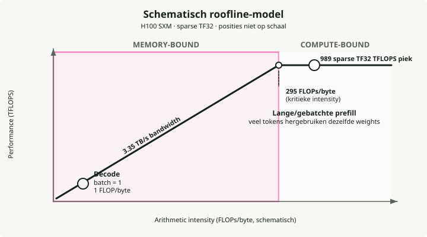
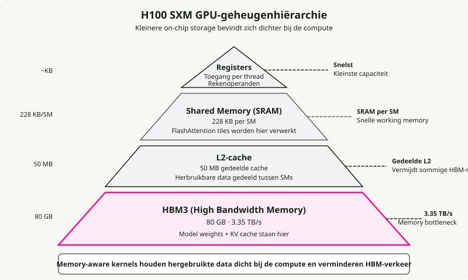
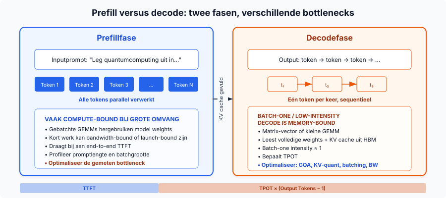
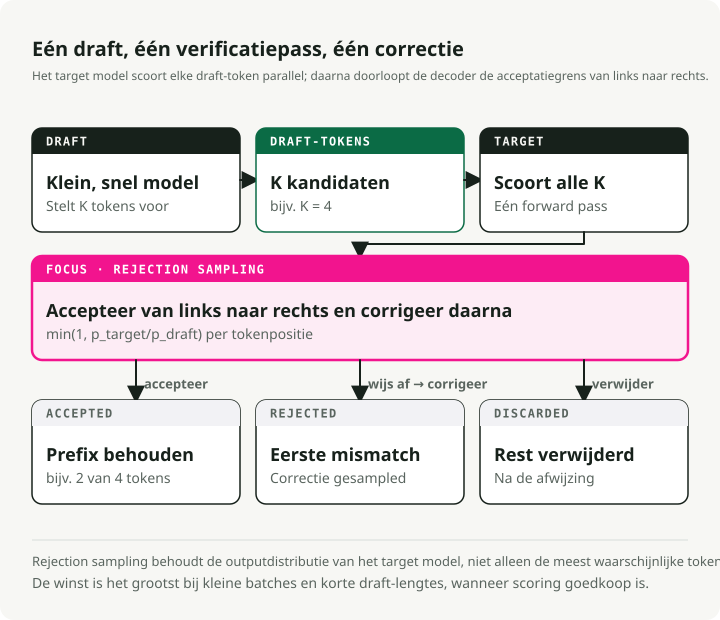
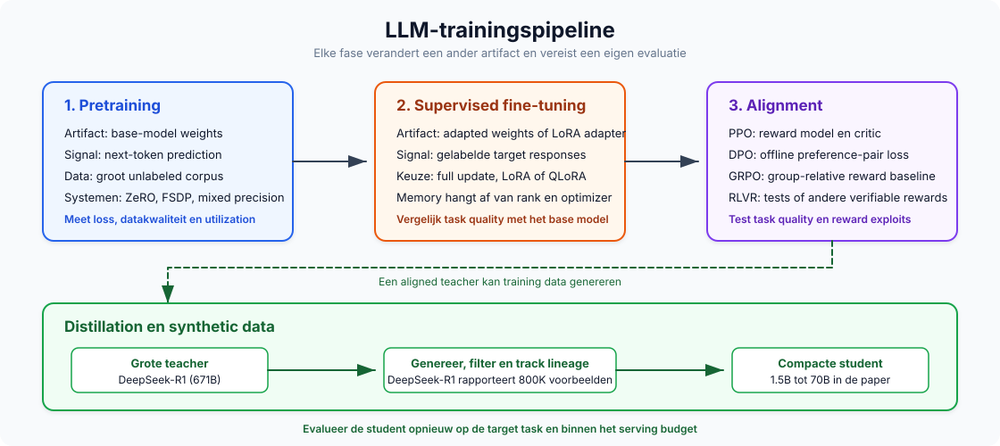
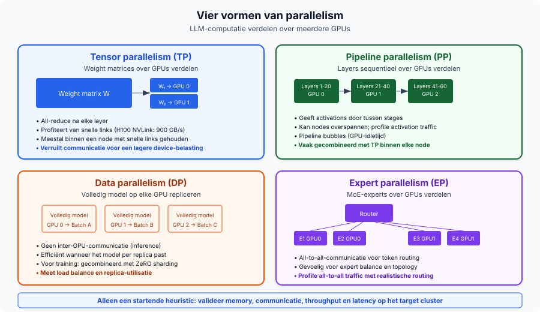
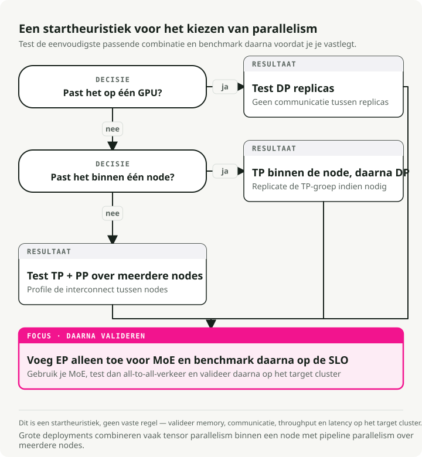
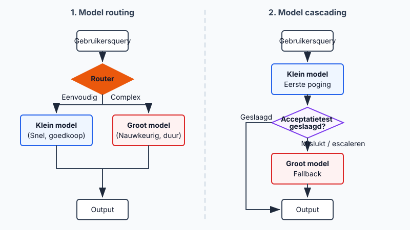
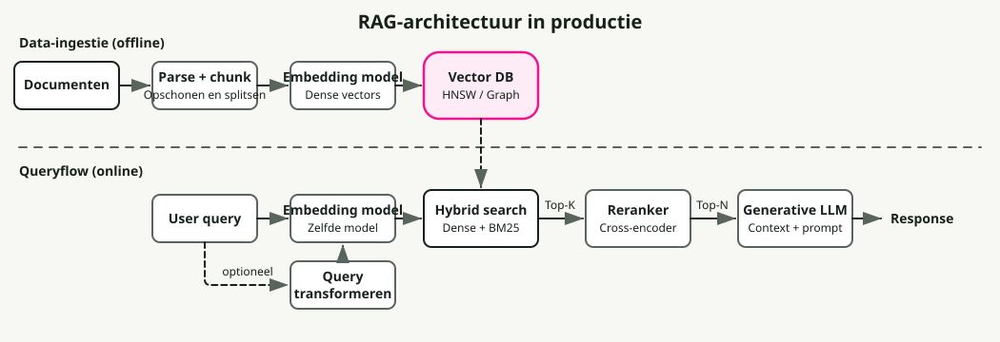
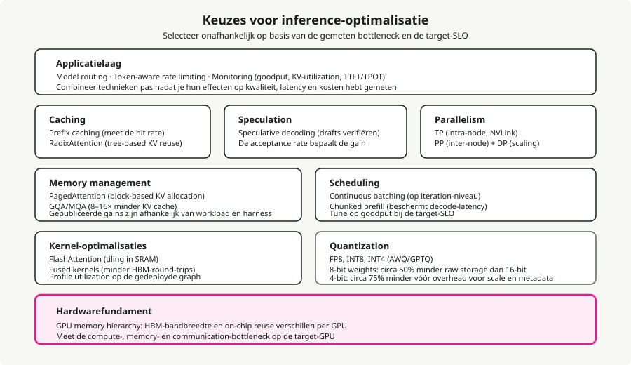

Automatische vertaling
Dit artikel is automatisch vertaald vanuit de oorspronkelijke Engelse versie.
LLM Engineering-gids: 45 concepten voor inferentie, training, architectuur en operations
LLM-systemen in productie steunen tegelijk op GPU-hardware, systems engineering en ML-theorie. Dezelfde handvol concepten komt terug, of je nu TTFT voor een chatbot aan het tunen bent of DeepSpeed ZeRO configureert voor een fine-tuning-run. Deze gids brengt ze op één plek samen.
TL;DR: 45 concepten in acht delen: hardware, inferentiefundamenten, inferentie-optimalisaties, modelarchitectuur, training en alignment, schalen en deployment, applicaties en productie-operations. Elke entry bevat de definitie, waarom het belangrijk is, de kerncijfers en links naar gerelateerde concepten. De data loopt van 2024 tot begin 2026, met bronnen.
Deze gids gaat uit van bekendheid met basis-ML (backpropagation, gradient descent, softmax) en enige systeemkennis (memory hierarchies, basisnetwerken).
Opmerking over de scope
Dit is met ruime marge de grootste post op deze blog. Je hoeft hem niet van kaft tot kaft te lezen. Gebruik de tabel hieronder om direct naar de delen te springen die voor jou relevant zijn.
| Deel | Onderwerpen | Secties |
|---|---|---|
| I — Hardwarefundamenten | Roofline-model, GPU-geheugen, hardwareglossarium | 1–3 |
| II — Inferentiefundamenten | Latency, throughput, KV-cache, attention, quantization | 4–9 |
| III — Inferentie-optimalisaties | CUDA-kernels, FlashAttention, batching, PagedAttention, speculative decoding | 10–17 |
| IV — Modelarchitectuur | Transformer-internals, decoder-only, MoE, tokenization, context windows | 18–22 |
| V — Training en alignment | Pretraining, LoRA, mixed precision, ZeRO, scaling laws, RLHF/DPO/GRPO, distillation | 23–32 |
| VI — Schalen en deployment | Parallelisme, serving frameworks, GPU-selectie, routing | 33–36 |
| VII — Applicaties | Embeddings, RAG, agents, prompt engineering | 37–40 |
| VIII — Productie-operations | Rate limiting, failure modes, monitoring, kosten, capaciteitsplanning | 41–45 |
Deel I — Hardwarefundamenten
De concepten hier — arithmetic intensity, de GPU-memory hierarchy en de hardwaretermen — komen overal elders in deze gids terug.
1. Memory-Bound vs Compute-Bound en het Roofline-model
Het startpunt voor LLM-performance is arithmetic intensity: hoeveel nuttige berekeningen voert de GPU uit voor elke byte data die hij uit geheugen laadt? Die ratio bepaalt of een operatie compute-bound is (wacht op de processor) of memory-bound (wacht op data die geladen moet worden).
Elke GPU heeft een "critical intensity"-drempel waarbij zijn compute-capaciteit precies in balans is met zijn memory bandwidth. Voor een NVIDIA H100 (Datasheet, 2023):

De twee fasen van LLM-inferentie zitten aan tegenovergestelde kanten van deze drempel:
- Decode is memory-bound. Tokens één voor één genereren betekent dat je de volledige multi-gigabyte weight matrix uit geheugen laadt om die te vermenigvuldigen met één nieuw token. In 16-bit precisie (2 bytes per parameter) is dat precies 1 FLOP/byte, bijna 300x onder de H100-drempel. De compute-units zitten meer dan 99% van de tijd idle te wachten op geheugen.
- Prefill is compute-bound. Het verwerken van de input prompt laadt de weights één keer, maar vermenigvuldigt ze tegelijk met honderden of duizenden tokens. De intensity stijgt ruim boven 295 en verzadigt de compute-units.
Dus om decode te versnellen, werk je aan memory bandwidth: verklein de weights met quantization, verlaag KV-memory-overhead met GQA en PagedAttention, en verhoog intensity met batching. Om prefill te versnellen, werk je aan ruwe compute: snellere GPU's, FP8-compute.
2. GPU-memory hierarchy
Een GPU heeft vier geheugenlagen, opgebouwd als een piramide: onderaan groot maar traag main memory (HBM), bovenaan piepkleine maar zeer snelle registers. Data op en neer bewegen door deze piramide is de belangrijkste file. De hardste bottleneck zit tussen HBM en SRAM, waarbij SRAM ongeveer 10x sneller is.

Van snelst naar traagst op een H100:
- Registers — het snelste geheugen, direct gekoppeld aan de processing threads. Hier draait de math daadwerkelijk; data moet hier geladen worden voordat de Tensor Cores het kunnen gebruiken.
- SRAM (Shared Memory) — het werkgeheugen met ongeveer 33 TB/s.
- L2 Cache — een tussenlaag (50 MB) met rond 12 TB/s. Die fungeert als buffer zodat, wanneer meerdere SM's dezelfde weights nodig hebben, ze niet allemaal uit HBM hoeven te fetchen.
- HBM3 — het 80 GB main memory met modelweights en KV-cache, op ~3.35 TB/s.
De meeste softwaretrucs in deze gids (FlashAttention, kernel fusion, PagedAttention) bestaan om data zo lang mogelijk hoog in SRAM te houden en de 10x tragere terugweg naar HBM te vermijden.
3. GPU-hardwareglossarium
De termen hieronder komen door de rest van de gids steeds terug.
HBM (High Bandwidth Memory) — Gestapelde DRAM-dies verbonden via through-silicon vias (TSV's), on-package gemonteerd naast de GPU-die. Generaties: HBM2e (A100, 2 TB/s), HBM3 (H100, 3.35 TB/s), HBM3e (H200/B200, 4.8–8 TB/s). Waarom relevant voor LLM's: decode is memory-bandwidth-bound, dus HBM-bandwidth bepaalt direct TPOT.
GDDR (Graphics DDR) — Traditioneel grafisch geheugen (GDDR6, GDDR6X) gebruikt in consumer-GPU's (RTX 4090, L40S). Lagere bandwidth dan HBM maar goedkoper per GB. GDDR6X op RTX 4090 levert ~1 TB/s versus H100's 3.35 TB/s HBM3.
SM (Streaming Multiprocessor) — Het basisbouwblok voor compute in NVIDIA-GPU's. Elke SM bevat CUDA cores, Tensor Cores, shared memory (SRAM) en een warp scheduler. H100 has 132 SMs; A100 heeft er 108.
Tensor Cores — Gespecialiseerde matrix-multiply-accumulate-units binnen elke SM. Ze versnellen mixed-precision matmuls (FP16, BF16, FP8, INT8) die transformer-compute domineren. H100 Tensor Cores leveren 989 TFLOPS in TF32 versus ~67 TFLOPS van alleen CUDA cores.
CUDA Cores — General-purpose floating-point- en integer-units. Ze verwerken element-wise operations, activatiefuncties en niet-matmul-werk. Tensor Cores doen het zware werk voor LLM's; CUDA cores doen de rest.
Warp — Een groep van 32 threads die in lockstep uitvoeren op een SM. De kleinste scheduling-unit op NVIDIA-GPU's. Warp specialization wijst verschillende warps toe aan verschillende taken (data laden vs. compute) voor pipelining.
NVLink — High-speed GPU-to-GPU-interconnect binnen een node. NVLink 4.0 (H100) levert 900 GB/s bidirectioneel; NVLink 5.0 (B200) haalt 1.8 TB/s. Essentieel voor tensor parallelism waarbij GPU's elke laag activaties moeten uitwisselen.
InfiniBand — High-speed netwerkfabric voor inter-node GPU-communicatie. NVIDIA ConnectX-7 levert 400 Gb/s per poort. Gebruikt voor pipeline parallelism en distributed training over nodes heen.
RDMA (Remote Direct Memory Access) — Laat één GPU geheugen van een andere machine lezen/schrijven zonder CPU erbij te betrekken, wat latency minimaliseert. GPUDirect RDMA maakt directe GPU-to-GPU-transfers over nodes mogelijk. Gebruikt in disaggregated serving voor KV-cachetransfers.
NVMe (Non-Volatile Memory Express) — High-speed SSD-interface gebruikt voor KV-cache offloading en ZeRO-Infinity-parameteroffloading wanneer GPU/CPU-geheugen onvoldoende is. Sequentiële readsnelheden van 5–7 GB/s per drive (PCIe Gen 4), met nieuwere Gen 5-drives op 10–14 GB/s.
TFLOPS / PFLOPS — Tera/Peta floating-point operations per second. 1 TFLOPS = 10¹² FLOPS. De standaardmaat voor GPU-compute-throughput. H100 levert 989 TFLOPS (TF32); FlashAttention-3 haalt ~1.2 PFLOPS in FP8.
Deel II — Inferentiefundamenten
Inferentie is het deel van het systeem dat gebruikers daadwerkelijk voelen. Latency, de KV-cache, het uitvoeringsmodel met twee fasen, attention en quantization bepalen samen hoe snel, goedkoop en betrouwbaar je kunt serven.
4. Latency: TTFT, TPOT en percentielen
Time to First Token (TTFT) is de vertraging tussen het indienen van een request en het eerste outputtoken. Die wordt bepaald door de prefill-fase: het model moet de hele prompt verwerken voordat het iets kan genereren, dus langere prompts betekenen hogere TTFT. Productiedoelen liggen van <100 ms voor code completion tot <500 ms voor chatbots. MLPerf Inference v5.0 zet P99 TTFT op \(\leq\) 450 ms voor Llama 2 70B.
Time Per Output Token (TPOT) is het gemiddelde interval tussen opeenvolgende tokens na het eerste. Dit hoort bij de decode-fase, waar elke stap memory-bandwidth-bound is:
De gemiddelde stille leessnelheid van mensen is ongeveer 250 ms per woord (~5 tokens/s) (Brysbaert, 2019), maar systemen mikken op veel hogere snelheden zodat gebruikers nooit op tekst hoeven te wachten. De drempel voor soepel aanvoelende streaming is ongeveer 25 ms per token (~40 tokens/s). MLPerf zet P99 TPOT op \(\leq\) 40 ms voor interactieve workloads.
P50 vs P99 latency is belangrijk omdat de mediaan de worst-case experience verbergt. P99 is de traagste 1% van requests, en daar zitten user complaints en SLA-schendingen. Een systeem met een goede P50 en een slechte P99 heeft een batching-, preemption- of queue-depth-probleem.
5. Throughput: tokens per seconde en de latency-trade-off
Throughput meet je in outputtokens per seconde over alle gelijktijdige requests heen. Requests per seconde is een zwakkere metric, omdat een response van 10 tokens en een response van 1.000 tokens heel verschillende kosten hebben. Typische cijfers: Llama 3.1 8B op één H100 haalt 5.000–11.000 outputtokens/s bij hoge batchgroottes (vLLM Benchmarks, 2024); Llama 3 70B FP8 op 4×H100 zit in dezelfde orde van grootte op vLLM, SGLang en TensorRT-LLM.
De trade-off: bij lage concurrency krijgt elk request uitstekende latency, maar de GPU is onderbenut. Het batch size verhogen verhoogt throughput bijna lineair totdat compute verzadigt, waarna latency scherp oploopt. Goodput, het aandeel requests dat je SLO-doelen haalt, is de metric die ruwe throughput koppelt aan echte gebruikerstevredenheid.
6. KV-cache: de bottleneck achter de meeste andere bottlenecks
Tijdens autoregressieve generatie let elk nieuw token op alle eerdere tokens. De KV-cache bewaart de Key- en Value-projecties van elk token in elke laag om \(O(n^2)\)-recomputation te vermijden. Zonder die cache zou het genereren van token \(n\) vereisen dat het model opnieuw draait over alle \(n-1\) eerdere tokens.
De KV-cache is meestal de dominante memory pressure omdat die lineair groeit met sequentielengte, batch size en laagaantal:
waarbij:
- \(L\) = aantal lagen
- \(h_{kv}\) = aantal KV-heads
- \(d_h\) = headdimensie
- \(s\) = sequentielengte
- \(B\) = batch size
Concrete voorbeelden met FP16 en batch size 1: Llama 3 8B op 8.192 tokens gebruikt ~1.0 GB KV-cache; op 128K tokens, 16 GB. Llama 3 70B op 128K tokens heeft ~40 GB nodig voor één enkele sequentie, de helft van het VRAM van een H100. Bij productiebatches overschrijdt KV-cache gemakkelijk het geheugen voor modelweights. Naive implementaties verspillen 60–80% van het toegewezen KV-geheugen aan fragmentatie, en dat is precies het probleem waarvoor PagedAttention is gebouwd.
De belangrijkste optimalisaties zijn GQA (minder KV-heads), KV-cache-quantization (FP8/INT8), PagedAttention (blokgebaseerde allocatie met <4% waste) en offloading van KV-cache naar CPU of NVMe.
7. Prefill vs decode: twee fasen, twee bottlenecks
De prefill-fase verwerkt de volledige input prompt parallel en vult de KV-cache. Deze fase is compute-bound: grote matrixvermenigvuldigingen verzadigen de Tensor Cores volledig, en dit bepaalt TTFT. De decode-fase genereert één token tegelijk, waarbij elke stap de volledige modelweights en KV-cache uit HBM leest om één token te produceren. Deze is memory-bandwidth-bound: de compute-units zitten grotendeels idle te wachten op data, en dit bepaalt TPOT.

Chunked prefill splitst de prompt op in vaste chunks (bijvoorbeeld 512 tokens) in plaats van alles in één keer te verwerken. Een lange prefill blokkeert dan niet langer lopende decode-requests, compute-bound en memory-bound werk worden op dezelfde GPU samen gescheduled, en vLLM-benchmarks tonen +50% throughput (Agrawal et al., 2024). De prijs is een iets hogere TTFT voor het nieuwe request.
Een nieuwer patroon, disaggregated serving (geïntroduceerd door Splitwise en DistServe, nu gebruikt door Perplexity en NVIDIA Dynamo), scheidt prefill en decode fysiek over verschillende GPU-pools, elk geoptimaliseerd voor zijn eigen bottleneck. KV-cache wordt tussen pools verplaatst via RDMA.
8. GQA en MQA: de KV-cache verkleinen
Standaard Multi-Head Attention (MHA) geeft elke query head zijn eigen K- en V-head. Multi-Query Attention (MQA) deelt één enkele KV-head over alle query heads, wat een extreme reductie is. Grouped-Query Attention (GQA) is de praktische middenweg: groepen query heads delen één KV-head.
Llama 3 70B gebruikt 64 query heads maar slechts 8 KV-heads, een 8x reductie van de KV-cache ten opzichte van MHA. Llama 3.1 405B gaat naar 128 query heads met 8 KV-heads voor een 16x reductie (Meta, 2024). GQA behoudt MHA-niveau kwaliteit (binnen ~1% op benchmarks) terwijl het MQA-niveau snelheid benadert (Ainslie et al., 2023). Een kleinere KV-cache betekent grotere batches, hogere throughput en lagere decode-latency per token.
9. Quantization: bits inruilen voor snelheid en geheugen
Quantization verlaagt de precisie van modelweights en/of activaties. De kerntrade-offs:
| Formaat | Bits | Geheugen (7B-model) | Kwaliteitsimpact |
|---|---|---|---|
| FP16/BF16 | 16 | ~14 GB | Baseline |
| FP8 | 8 | ~7 GB | In essentie verliesloos op Hopper (H100) |
| INT8 | 8 | ~7 GB | 1-3% degradatie met tuning |
| INT4 | 4 | ~3.5 GB | Stabiel voor 70B+, risicovol voor kleine modellen |
AWQ (Activation-Aware Weight Quantization) vindt de <1% salient weights door naar activatiemagnitudes te kijken en past per-channel scaling toe om ze te beschermen. Het heeft slechts 128–1.024 kalibratietokens nodig en won de MLSys 2024 Best Paper Award. GPTQ gebruikt second-order Hessian-informatie voor laaggewijze quantization, wat beter werkt op coding-benchmarks maar meer kalibratiedata nodig heeft. bitsandbytes (de library van Tim Dettmers) quantizeert on the fly tijdens het laden van het model zonder preprocessing-kosten; het NF4-formaat drijft QLoRA-fine-tuning aan. FP8 op H100/H200 wordt de productiedefault: vrijwel verliesloos met 2x geheugenreductie.
Eén punt dat het waard is om te markeren: de kernel is vaak belangrijker dan het quantization-algoritme. Dezelfde gequantiseerde weights die via verschillende kernels worden geserved, kunnen een 2.6x throughputverschil laten zien puur door hoe goed ze de GPU benutten (Section 10).
Deel III — Inferentie-optimalisaties
Dit deel gaat over de softwaretechnieken die een werkend inferentiesysteem in een snel systeem veranderen. Elk richt zich op een specifieke bottleneck: FlashAttention benut de SRAM-HBM-kloof, PagedAttention verwijdert KV-cachefragmentatie, continuous batching houdt de GPU bezig.
10. CUDA-kernels en kernel fusion
Een CUDA-kernel is een functie die voor de GPU is geschreven en parallel draait over duizenden threads. Wanneer de CPU een kernel aanroept, verdeelt de GPU het werk over zijn SMs: elke SM draait meerdere warps van 32 threads, en elke thread verwerkt een deel van de data. Elke operatie in LLM-inferentie, van matrixvermenigvuldiging tot token sampling, eindigt uiteindelijk als een kernel launch. Eén enkele forward pass door een 70B-model triggert honderden tot duizenden kernel launches, en het verschil tussen een naive kernel en een geoptimaliseerde kernel kan bepalen of je systeem zijn latency-SLO haalt.
De belangrijkste kernelcategorieën in LLM-serving:
- GEMM-kernels voor matrixvermenigvuldiging, die zowel prefill- als decode-compute domineren.
- Attention-kernels zoals FlashAttention die berekeningen tilen zodat ze in SRAM blijven in plaats van naar HBM te spillen.
- Fused kernels die meerdere operaties combineren (zoals add + layer norm of QKV-projection) in één launch om intermediaire HBM-round-trips over te slaan.
- Sampling-kernels die logits omzetten in token-ID's via top-k-, top-p- of temperature sampling.
Kernelkwaliteit is vaak belangrijker dan het quantization-algoritme. Dezelfde INT4-gequantiseerde weights die via Marlin (een geoptimaliseerde FP16xINT4-kernel) worden geserved, halen 712 tokens/s versus 276 tokens/s voor vanilla GPTQ, een 2.6x throughputverschil puur door betere GPU-benutting. Marlin bereikt dat via asynchrone memory fetches en shared-memory-queues die de Tensor Cores gevoed houden in plaats van te laten wachten op HBM. Triton verlaagt de drempel voor het schrijven van custom kernels door GPU-programmering via Python aan te bieden in plaats van ruwe CUDA C++, waardoor kerneloptimalisatie toegankelijk wordt voor ML-engineers in plaats van alleen GPU-specialisten. De meeste optimalisaties later in dit deel (FlashAttention, fused kernels, PagedAttention) zijn in wezen ofwel betere kernels of slimmere manieren om kernel launches te orkestreren.
Kernel fusion combineert verschillende opeenvolgende operaties in één enkele GPU-kernel en slaat intermediaire HBM-writes over. Veelvoorkomende fusions: QKV-projection (één matmul in plaats van drie), attention + softmax (FlashAttention zelf), add + RMSNorm (FlashNorm) en SwiGLU-activatie (DeepFusionKernel). Triton maakt het praktisch om deze fused kernels in Python te schrijven. Zonder fusion heeft een 70B-model duizenden kernel launches per token bij ~30% GPU-utilization. Met fusion reduceren lagen tot 1–2 geoptimaliseerde kernels bij 80–90% utilization.
11. FlashAttention: attention tilen om in SRAM te blijven
Standaard attention materialiseert de volledige \(N \times N\)-attention matrix in HBM, wat \(O(N^2)\) geheugen kost en veel memory traffic produceert. Het idee achter FlashAttention is om deze matrix helemaal nooit te materialiseren. Het tilet de Q-, K- en V-matrices in blokken die in SRAM passen, berekent partial attention binnen elke tile en merge't resultaten met een online softmax (waarbij over blokken heen incrementeel de running max en sum worden bijgehouden). Geheugengebruik daalt van \(O(N^2)\) naar \(O(N)\), en HBM-reads dalen met een orde van grootte.
Elke versie richt zich op de bottleneck van zijn GPU-generatie:
- FlashAttention v1 (A100, 2022) bewees dat het idee van tiling plus online softmax werkt. Een 2–4x speedup ten opzichte van standaard attention, maar slechts 25–40% GPU-utilization omdat kernel scheduling veel SM's idle liet.
- FlashAttention v2 (A100, 2023) herwerkte het parallelisme om te splitsen over de sequencedimensie in plaats van batch en heads. Het bereikte 50–73% utilization op A100, ongeveer 2x sneller dan v1.
- FlashAttention v3 (H100 Hopper, 2024) voegde warp specialization toe (aparte warps voor dataverplaatsing vs. math) en GEMM-softmax-pipelining om memory loads met compute te overlappen. 75–85% utilization op H100 en tot ~1.2 PFLOPS in FP8. NeurIPS 2024 spotlight.
- FlashAttention v4 (B200 Blackwell, 2026) pakt een nieuwe bottleneck aan: op Blackwell schaalt tensor-core-throughput zo snel dat niet-matmul-operaties (softmax exponentials, rescaling) limiterend worden. FA4 emuleert de exponent in software met polynomiale benaderingen op FMA-units, gebruikt conditional rescaling om overhead te verlagen en slaat intermediairen op in Blackwells dedicated tensor memory (TMEM) in plaats van registers. Het resultaat: 1.605 TFLOPS/s op B200 in BF16, 1.3x sneller dan cuDNN 9.13 en 2.7x sneller dan Triton.
Elke generatie botste op een andere hardwaremuur, en elke FlashAttention-versie werd vanaf de kernel opnieuw ontworpen om die aan te pakken.
12. FlashDecoding: de decode-bottleneck paralleliseren
Standaard FlashAttention houdt de GPU bezig door werk te splitsen over batchgrootte en querylengte. Tijdens decode genereert het model precies 1 token per keer (query length = 1). Als de batch size keer het aantal attention heads kleiner is dan het totale aantal SM's van de GPU (108 op een A100), zit het grootste deel van de GPU idle terwijl een paar units sequentieel door de tokengeschiedenis heen werken.
FlashDecoding lost dit op door een nieuwe parallelisatiedimensie toe te voegen: de KV-sequentielengte zelf. Het knipt de KV-cache in kleinere chunks en verdeelt die over alle anders idle GPU-processors om parallel te evalueren, en merge't daarna hun partial computations met een log-sum-exp-reduction.
Het resultaat is tot 8x end-to-end decode-speedup op lange sequenties (64K context) en ruwweg constante decode-tijd per token. Token 60.000 genereren blijft bijna even snel als token 100 genereren.
13. Continuous batching vs static batching
Static batching wacht tot elke sequentie in een batch klaar is voordat de volgende start, waardoor korte sequenties GPU-cycles verspillen door idle te blijven nadat ze end-of-sequence hebben bereikt. Continuous batching (geïntroduceerd door de Orca paper, OSDI 2022) werkt op iteratieniveau: bij elke decode-stap worden afgeronde sequenties verwijderd en nieuwe ingevoegd.
De cijfers zijn groot. Anyscale's benchmarks op OPT-13B tonen geoptimaliseerde static batching op 4x boven naive, continuous batching op 8x, en vLLM met continuous batching + PagedAttention op 23x boven naive (Anyscale, 2023). De keerzijde is dat continuous batching KV-cachefragmentatie versterkt. Meer gelijktijdige sequenties betekent meer verspreide geheugenallocaties, en dat is precies het probleem waarvoor PagedAttention is gebouwd.
14. PagedAttention: virtueel geheugen voor KV-cache
vLLM's PagedAttention past het OS-idee van virtual memory toe op KV-cachebeheer. De KV-cache wordt opgesplitst in blokken van vaste grootte (typisch 16 tokens), blokken worden on demand gealloceerd terwijl tokens worden gegenereerd, en logische (sequentiële) posities mappen via block tables naar fysieke (verspreide) geheugenlocaties. Meerdere requests die een prefix delen (system prompts, beam search) kunnen naar dezelfde fysieke blokken wijzen.
Eerdere systemen verspilden 60–80% van het KV-cachegeheugen aan fragmentatie en pre-allocatie. PagedAttention brengt dat terug naar <4%, waardoor throughput met 2–4x stijgt bij dezelfde latency en tot 24x boven HuggingFace Transformers (vLLM Blog, 2023).
15. Speculative decoding: meerdere tokens per forward pass

Een klein draft model genereert \(K\) kandidaat-tokens, waarna het grote target model alle \(K\) tokens in één forward pass verifieert. Correcte tokens worden geaccepteerd; de eerste onjuiste wordt afgewezen. De outputkwaliteit is mathematisch identiek aan die van alleen het target model, dus dit is een verliesloze speedup.
Het werkt omdat LLM-decode memory-bandwidth-bound is: \(K\) tokens verifiëren kost ongeveer evenveel als er 1 genereren, omdat in beide gevallen alle modelweights één keer geladen worden. Typische speedups liggen tussen 1.5x en 3x, met methoden zoals EAGLE-3 die tot 6.5x halen. Varianten zijn onder meer Medusa (extra prediction heads, geen apart model), prompt lookup decoding (n-gram matching tegen de input, gratis) en EAGLE (feature-level extrapolation).
De vangst is concurrency: bij hoge batchgroottes kan de extra draft- en verificatiecompute een 1.4–1.8x vertraging veroorzaken. Speculative decoding helpt het meest bij lage batchgroottes en taken waar draft acceptance hoog is (summarization, QA).
16. Prefix caching en KV-cachehergebruik
In plaats van de KV-cache weg te gooien wanneer een request klaar is, bewaart prefix caching die voor hergebruik bij nieuwe requests die dezelfde prefix-tokens delen. Dat snijdt redundante prefill weg voor system prompts, few-shot examples, RAG-context en multi-turn conversatiegeschiedenis.
vLLM's Automatic Prefix Caching hasht elk KV-blok en gebruikt een globale hashtabel voor lookup, met cache hit rates van 87%+ op goed gestructureerde prompts. SGLang's RadixAttention onderhoudt een radix tree van alle gecachte KV-tensors met token-level granulariteit en automatische detectie van cachingkansen, goed voor tot 5x throughput improvement.
17. Streaming in de praktijk
Streaming stuurt tokens naar de client zodra ze worden gegenereerd, in plaats van te wachten op de volledige response. De meeste serving frameworks bieden dit aan via Server-Sent Events: de client opent een langlevende HTTP-verbinding, en de server pusht elk token (of een kleine tokenbatch) als een data: event. TTFT bepaalt wanneer de gebruiker voor het eerst output ziet; TPOT bepaalt hoe vloeiend dat voelt. Doel: TPOT < 25 ms voor vloeiende streaming (~40 tokens/s).
Aan de clientkant dwingt streaming bufferbeslissingen af. Token voor token renderen kan visuele jitter geven, vooral bij markdown of codeblokken die multi-token context nodig hebben om correct op te maken. Gebruikelijke patronen zijn word-level buffering (tokens verzamelen tot een spatiegrens), line-level buffering (wachten op een newline voordat er gerenderd wordt) en adaptive buffering (direct renderen voor prose, bufferen voor codeblokken). De parameter stream_options: {"include_usage": true} in OpenAI-compatibele API's geeft tokenaantallen terug in het laatste SSE-event, wat accurate cost tracking voor gestreamde responses mogelijk maakt.
Chunked prefill is wat streaming onder load overeind houdt. Zonder dat kan één lange prefill de tokenlevering voor elke andere gelijktijdige gebruiker stilleggen.
Deel IV — Modelarchitectuur
Hoe LLM's zijn opgebouwd: de transformer block, tokenization, contexthantering en de architecturale varianten die de default zijn geworden. Deze vormen de basis voor zowel inferentie als training.
18. Essentiële transformerarchitectuur
Een moderne decoder-only transformer (GPT, Llama) is een stapel identieke lagen, elk met twee subblokken: attention en feed-forward. Elk subblok is omgeven door een residual connection en normalisatie. De kerncomponenten:
Multi-Head Attention — het mechanisme waarmee elk token naar elk ander token kan kijken om te bepalen wat relevant is. De input wordt geprojecteerd in drie matrices: Queries (waar ben ik naar op zoek?), Keys (wat bevat ik?) en Values (welke informatie draag ik?). Attention-scores worden dan berekend als:
Het dotproduct \(QK^T\) meet de gelijkenis tussen elk paar tokens. Delen door \(\sqrt{d_k}\) voorkomt dat de dotproducten te groot worden (wat softmax in regio's met verdwijnende gradiënten zou duwen). De softmax zet scores om naar waarschijnlijkheden, en vermenigvuldiging met \(V\) produceert een gewogen combinatie van value vectors. Door dit parallel over meerdere heads te draaien kan het model tegelijk op verschillende relaties letten (één head voor syntaxis, een andere voor coreferentie, enzovoort).
Feed-Forward Network (FFN) — zodra attention heeft bepaald welke tokens relevant zijn, bepaalt de FFN wat ermee te doen. Moderne LLM's gebruiken SwiGLU in plaats van de oorspronkelijke FFN met twee matrices en ReLU:
SwiGLU gebruikt drie weight matrices in plaats van twee en een vloeiende Swish-activatie in plaats van ReLU. Dat voegt ongeveer 50% meer parameters toe aan de FFN, maar verbetert de kwaliteit genoeg dat elke grote modelfamilie (Llama, Mistral, Qwen, Gemma) het heeft overgenomen. De FFN is doorgaans goed voor ongeveer twee derde van alle modelparameters.
Residual Connections — elk subblok telt zijn output op bij de input: \(\text{Output} = \text{Input} + \text{Sublayer}(\text{Input})\). Zonder deze skip connection verdwijnen gradiënten tijdens backpropagation door 80–128 lagen heen. De residual creëert een pad waarmee informatie en gradiënten rechtstreeks van vroege naar late lagen kunnen stromen.
RMSNorm — heeft LayerNorm in vrijwel alle moderne LLM's vervangen. LayerNorm normaliseert via recentering (het gemiddelde aftrekken) en rescaling (delen door de standaardafwijking). RMSNorm slaat het aftrekken van het gemiddelde over en rescalet alleen, wat het aantal aangeleerde parameters halveert en 7–64% sneller is zonder kwaliteitsverlies. Pre-norm-plaatsing (normaliseren vóór attention/FFN in plaats van erna) is nu standaard omdat dit stabielere gradiënten geeft zonder zorgvuldige learning rate warmup.
Schatting van parameteraantal voor een decoder-only model:
waarbij \(V\) = vocabulary size, \(d\) = hidden dimension, \(L\) = layer count. De term \(V \times d\) is de embedding matrix; de \(12 \times d^2\) per laag dekt attention-projecties (Q, K, V, output = \(4d^2\)) en de SwiGLU-FFN (\(8d^2\) met de gebruikelijke tussengrootte van \(\frac{8}{3}d\)). Voor Llama 3 8B (\(V\)=128,256, \(d\)=4,096, \(L\)=32): \(128{,}256 \times 4{,}096 + 12 \times 32 \times 4{,}096^2 \approx 7.0B + 0.5B \approx 7.5B\) parameters (feitelijk: 8.03B met tied embeddings en GQA-aanpassingen).
19. Waarom decoder-only-architecturen domineren
De oorspronkelijke Transformer (2017) had zowel een encoder als een decoder. Sindsdien is het veld opgesplitst in drie architectuurfamilies, waarvan er één de default werd voor generatieve AI.
Encoder-only-modellen (BERT, RoBERTa) gebruiken bidirectionele attention: elk token let in beide richtingen op elk ander token. Dat levert rijke representaties op voor understanding-taken (classificatie, NER, semantische gelijkenis) maar kan geen tekst autoregressief genereren. Encoder-only-modellen domineren nog steeds als ruggengraat voor embedding models, rerankers en lichte classifiers (bijvoorbeeld de BERT-gebaseerde routers in RouteLLM).
Encoder-decoder-modellen (T5, BART, de oorspronkelijke Transformer) scheiden begrip van generatie. De encoder verwerkt de volledige input met bidirectionele attention, waarna de decoder output autoregressief genereert terwijl hij via cross-attention let op de representaties van de encoder. Dit had een natuurlijk voordeel voor sequence-to-sequence-taken zoals vertaling, waar input en output fundamenteel verschillende sequenties zijn. Google's T5 liet zien dat elke NLP-taak als text-to-text te formuleren is, en encoder-decoder-modellen voeden nog steeds sommige gespecialiseerde systemen (Whisper voor spraakherkenning, FLAN-T5 voor instruction following).
Decoder-only-modellen (GPT, Llama, Mistral, Gemini) gebruiken causale (unidirectionele) attention: elk token let alleen op eerdere tokens. Ze formuleren alles als next-token prediction: de "input" is het begin van de sequentie en de "output" is de voortzetting ervan. Vier redenen waarom deze architectuur het won:
-
KV-cache-efficiëntie. De KV-cache van eerdere tokens blijft geldig terwijl nieuwe tokens worden gegenereerd, dus je hoeft die nooit weg te gooien of opnieuw te berekenen. Encoder-decoder-modellen moeten twee aparte attention-caches onderhouden (self-attention plus cross-attention over de encoderoutput), wat memory overhead en architecturale complexiteit toevoegt.
-
Eenvoudigere training. Het trainingsdoel is gewone next-token prediction op ruwe tekst. Geen gepaarde input-outputdata (zoals vertaalmodellen nodig hebben) of reconstructie van gemaskeerde tokens (zoals BERT nodig heeft). Je kunt trainen op vrijwel elke tekst van internet, boeken en code zonder speciale preprocessing, wat een groot voordeel is wanneer je data opschaalt naar triljoenen tokens.
-
Architecturale eenvoud. Eén module verwerkt alles: dezelfde transformer block, \(L\) keer herhaald. Geen encoder-decoder-cross-attentionlagen, geen aparte encoderstack. Dat maakt parallelismestrategieën eenvoudiger (Section 33) en verkleint het engineering-oppervlak voor optimalisatie. FlashAttention, quantization en speculative decoding hoeven maar op één attentionpatroon te richten.
-
In-context learning. Decoder-only-modellen zijn van nature sterk in few-shot learning omdat voorbeelden, instructies en de query allemaal gewoon tokens in dezelfde sequentie zijn. Het model maakt geen onderscheid tussen "input" en "output"; het voorspelt het volgende token gegeven alles ervoor. GPT-3 demonstreerde dit als eerste op schaal, en het maakte decoder-only-modellen een sterke match voor de rol van general-purpose assistant.
20. Mixture of Experts
MoE vervangt de dense FFN in elke transformerlaag door meerdere kleinere expert-FFN's plus een lichte gating router. De router berekent voor elke expert een score (typisch een softmax over aangeleerde lineaire projecties) en selecteert de top-\(k\) experts per token. Alleen geactiveerde experts rekenen mee, zodat een model enorme totale capaciteit kan hebben terwijl de kost per token laag blijft. Dit is sparse conditional computation: totale parameters bepalen wat het model kan representeren, actieve parameters bepalen wat het kost om te draaien.
| Model | Totale params | Actieve params | Experts (gerouteerd + gedeeld) | Top-\(k\) |
|---|---|---|---|---|
| Mixtral 8x7B | 47B | ~13B | 8 + 0 | 2 |
| DeepSeek-V3 | 671B | 37B | 256 + 1 | 8 |
De shared expert in DeepSeek-V3 wordt altijd geactiveerd voor elk token. Die levert een basisrepresentatie waarop de gerouteerde experts kunnen specialiseren.
MoE trainen heeft eigen pijnpunten. Load balancing: tokens clusteren op een paar populaire experts en de rest wordt ondertraind. Expert collapse: experts convergeren naar identieke representaties, wat het nut van meerdere experts tenietdoet. En communicatie-overhead voor Expert Parallelism. Traditionele MoE-modellen voegen een auxiliary loss toe om onevenwichtige routing te bestraffen, maar die loss concurreert met het hoofdtrainingsdoel en verslechtert de kwaliteit. DeepSeek-V3 loste dit op met auxiliary-loss-free bias-termen: elke expert krijgt een bias bij zijn gating score, dynamisch aangepast buiten backpropagation, verlaagd voor overbelaste experts en verhoogd voor onderbenutte. Het resultaat is gebalanceerde routing zonder kwaliteitsinruil.
21. Tokenization: BPE, SentencePiece en tiktoken
LLM's zien geen tekst. Ze zien sequenties van integer token-ID's. Een tokenizer splitst ruwe tekst in tokens (subwoordsegmenten) en koppelt elk aan een ID. De keuze van tokenizer beïnvloedt modelkwaliteit, inferentiesnelheid en meertalige fairness.
Byte Pair Encoding (BPE) is het gangbare algoritme. Het merge't iteratief de meest frequente aangrenzende paren in het trainingscorpus. Een vereenvoudigd voorbeeld:
- Begin met een vocabulary op karakterniveau:
[l, o, w, e, r, _] - Het meest frequente paar is
(l, o)→ merge naarlo→ vocabulary:[l, o, w, e, r, _, lo] - Het volgende meest frequente paar is
(lo, w)→ merge naarlow→ vocabulary voegtlowtoe - Ga door tot de vocabulary de doelgrootte bereikt (bijv. 128K tokens)
Veelvoorkomende woorden zoals "the" worden één token, terwijl zeldzame woorden zoals "defenestration" worden opgesplitst in subwoordsegmenten zoals ["def", "en", "est", "ration"]. De trade-off is vocabularygrootte versus sequentielengte.
Drie tokenizerimplementaties dekken het grootste deel van productietoepassingen:
- SentencePiece behandelt input als een ruwe bytestream zonder taalafhankelijke preprocessing (geen pre-tokenization op spaties of interpunctie), waardoor het taalagnostisch is en veel uitmaakt voor niet-Latijnse scripts. Ondersteunt zowel BPE als unigram. Gebruikt door Llama 1/2, T5 en Mistral.
- tiktoken is OpenAI's Rust-gebaseerde tokenizer die byte-level BPE gebruikt. De gecompileerde Rust-core is 3–6x sneller dan Python-gebaseerde alternatieven. Llama 3 stapte over van SentencePiece naar het algoritme van tiktoken.
- HuggingFace Tokenizers is de Rust-gebaseerde library die BPE, WordPiece en Unigram ondersteunt. Het is de de-factostandaard voor open-source modeldistributie.
Vocabularygroottes zijn gestaag gegroeid, met grote implicaties voor efficiëntie:
| Model | Vocabulary size | Engelse fertility | Waarom het belangrijk is |
|---|---|---|---|
| GPT-2 | 50,257 | ~1.3 tokens/woord | Oorspronkelijke BPE-baseline |
| Llama 2 | 32,000 | ~1.4 tokens/woord | Kleinere vocabulary, langere sequenties |
| GPT-4 | 100,256 | ~1.1 tokens/woord | Betere compressie, minder tokens per request |
| Llama 3 | 128,256 | ~1.0 tokens/woord | 4x groter dan Llama 2, grote meertalige winst |
| GPT-4o | 200,000 | ~1.0 tokens/woord | Grootste productie-vocabulary |
Fertility (tokens per woord) meet compressie-efficiëntie. Lager is beter: minder tokens betekent kortere sequenties, lagere kosten en meer inhoud in het context window. Engels zit typisch op ~1.0–1.3 tokens/woord, maar niet-Latijnse scripts (Chinees, Japans, Koreaans, Arabisch) kunnen 2–4x hoger uitkomen met Engels-gecentreerde vocabularies. Dezelfde inhoud kost 2–4x meer tokens voor niet-Engelse gebruikers, wat een hardnekkig equity-probleem is dat grotere, evenwichtiger vocabularies slechts deels oplossen.
22. Context windows en positionele encodings
Het context window is het maximale aantal tokens dat een model in één enkele forward pass kan verwerken. Dat is sterk gegroeid:
| Model | Context window | Jaar |
|---|---|---|
| Original Transformer | 512 | 2017 |
| GPT-4 Turbo | 128K | 2023 |
| Claude 3.5 | 200K | 2024 |
| Gemini 1.5 Pro | 1M+ | 2024 |
| Grok 4 Fast | 2M | 2025 |
Hier zit een fundamenteel probleem: het attention-mechanisme behandelt zijn input als een set, niet als een sequentie. Het heeft geen ingebouwd begrip van woordvolgorde. Zonder positionele informatie zouden "the cat sat on the mat" en "the mat sat on the cat" identieke representaties opleveren. Positionele encodings voegen volgorde toe zodat het model weet waar elk token staat.
Drie benaderingen domineren:
-
RoPE (Rotary Position Embeddings) codeert de positie van elk token door query- en key-vectors te roteren met een hoek die proportioneel is aan de positie. Tokens dicht bij elkaar krijgen vergelijkbare rotaties, dus hun dotproduct (attention score) blijft hoog. Tokens ver uit elkaar krijgen heel andere rotaties, wat relatieve afstand encodeert. RoPE is de standaard voor vrijwel alle moderne open LLM's (Llama, Mistral, Qwen) omdat het goed omgaat met relatieve posities en computationeel goedkoop is.
-
ALiBi (Attention with Linear Biases) slaat embeddingmodificaties over en voegt direct een penalty toe aan attention-scores: hoe verder twee tokens uit elkaar liggen, hoe groter de negatieve bias. Geen aangeleerde parameters, geen extra compute. Het laat enige extrapolatie voorbij de trainingslengte toe, maar degradeert merkbaar bij 2x+ de trainingscontext.
-
YaRN (Yet another RoPE extensioN) is momenteel de beste optie om het context window van een model op te rekken voorbij waarop het is getraind. Het groepeert de frequentiedimensies van RoPE in drie categorieën (hoge frequentie: niet schalen; lage frequentie: lineair schalen; middenfrequentie: interpoleren) en past voor elke categorie andere scaling toe. Het resultaat: context extension met 10x minder fine-tuning-tokens en 2.5x minder trainingsstappen dan naive position interpolation.
Deel V — Training en alignment
Training is waar capabilities worden opgebouwd. Dit deel behandelt pretraining, efficiënte fine-tuning (LoRA, mixed precision), scaling laws en alignmentmethoden.
23. Pretraining, fine-tuning en alignment

Pretraining is self-supervised next-token prediction op triljoenen tokens. Het bouwt algemeen taalbegrip op en kost $500K to $100M+: Llama 3 405B gebruikte \(3.8 \times 10^{25}\) FLOPs. Supervised fine-tuning (SFT) past het voorgetrainde model aan op specifieke taken met gelabelde data, voor honderden tot lage duizenden dollars op één enkele GPU. RLHF / RLAIF leert subjectieve kwaliteiten zoals behulpzaamheid via preference learning: verzamel menselijke vergelijkingen, train een reward model en fine-tune daarna met RL (typisch PPO of DPO). RLAIF vervangt menselijke annotators door AI-feedback (Constitutional AI).
Compute bestrijkt ruwweg zes ordes van grootte: pretraining op \(10^{24}\)–\(10^{26}\) FLOPs, SFT op \(10^{18}\)–\(10^{21}\), RLHF ongeveer vergelijkbaar met SFT maar met 4 modelkopieën in geheugen voor PPO. Ik behandelde het volledige besliskader voor fine-tuning (wanneer fine-tunen versus RAG versus prompt engineering) in LLM Fine-Tuning Guide.
24. LoRA en QLoRA: parameter-efficiënte fine-tuning
LoRA bevriest de voorgetrainde weights en injecteert trainbare low-rank matrices \(A\) (\(r \times k\)) en \(B\) (\(d \times r\)), zodat de bijgewerkte weight \(W_0 + BA\) is. Het inzicht is dat weight updates tijdens fine-tuning een lage intrinsieke rank hebben. Dat verlaagt het aantal trainbare parameters met 10.000x (GPT-3 175B daalt van 175B naar ~18M) en GPU-geheugen met ~3x. Typische ranks: \(r\)=8–16 voor eenvoudige taken, \(r\)=64–128 voor complexe scenario's. LoRA-adapters kunnen na training worden gemerged zonder inference-overhead.
QLoRA laadt het basismodel in 4-bit NF4-quantization terwijl LoRA-adapters in BF16 worden getraind. NormalFloat4 plaatst meer quantizationniveaus rond nul, waar de weight density het hoogst is. QLoRA fine-tunet een 65B-model op één enkele 48GB-GPU met prestaties die nauwelijks te onderscheiden zijn van 16-bit volledige fine-tuning. De trade-off is 39% langere trainingstijd voor 33% GPU-geheugenbesparing versus standaard LoRA.
25. Mixed precision training
Elk floating-point-formaat verdeelt zijn bits over drie velden: sign (altijd 1 bit), exponent (bepaalt het dynamisch bereik) en mantissa (bepaalt de precisie). Meer exponentbits betekenen een groter bereik van representeerbare groottes; meer mantissabits betekenen fijnere verschillen tussen nabije waarden. Integer-formaten hebben helemaal geen exponent en representeren alleen gelijkmatig verdeelde gehele getallen binnen een vast bereik.
| Formaat | Bits | Layout (S / E / M) | Bereik | Precisie | Beste voor |
|---|---|---|---|---|---|
| FP32 | 32 | 1 / 8 / 23 | \(\pm 3.4 \times 10^{38}\) | ~7 decimale cijfers | Master weights, optimizer states (Adam momentum & variance) |
| BF16 | 16 | 1 / 8 / 7 | \(\pm 3.4 \times 10^{38}\) | ~2 decimale cijfers | Voorkeursformaat voor training — zelfde bereik als FP32, geen loss scaling nodig |
| FP16 | 16 | 1 / 5 / 10 | \(\pm 65{,}504\) | ~3 decimale cijfers | Training met loss scaling (oudere GPU's); inferentie op pre-Hopper-hardware |
| FP8 E4M3 | 8 | 1 / 4 / 3 | \(\pm 448\) | ~1 decimaal cijfer | Forward pass op Hopper (H100) — meer precisie voor weights & activaties |
| FP8 E5M2 | 8 | 1 / 5 / 2 | \(\pm 57{,}344\) | ~0.6 decimale cijfers | Backward pass op Hopper — groter bereik voor gradiënten |
| INT8 | 8 | fixed-point | \(-128\) to \(127\) | Exacte integers | Post-training weight quantization voor inferentie (W8A8); KV-cache-quantization |
| INT4 | 4 | fixed-point | \(-8\) to \(7\) | Exacte integers | Agressieve weight-only quantization (AWQ, GPTQ) voor inferentie op memory-constrained hardware |
BF16 heeft hetzelfde bereik als FP32 omdat bereik wordt bepaald door het exponentveld, en BF16 behoudt alle 8 exponentbits van FP32. Het geeft in plaats daarvan mantissabits op (7 versus 23), waarmee het precisie inruilt voor 2x geheugenreductie zonder de overflow- en underflowproblemen van FP16-training. FP16 heeft slechts 5 exponentbits, waardoor het bereik op ~65K eindigt. Gradiënten gaan daar routinematig overheen, daarom vereist FP16-training loss scaling: vermenigvuldig de loss met een grote constante vóór backprop en deel gradiënten daarna weer terug. BF16 maakt loss scaling overbodig.
Integer-formaten ontbreken bij training omdat integer-quantization geen dynamisch bereik heeft en de grote spreiding van gradiëntgroottes tijdens backpropagation niet kan representeren. Ze werken goed voor inferentie, waar weights bevroren zijn en op een vast bereik gemapt kunnen worden. INT4-quantization (via AWQ of GPTQ) verlaagt een 7B-model van ~14 GB naar ~3.5 GB, genoeg om op consumer-GPU's te draaien met slechts geringe kwaliteitsverliezen.
FP8-training op H100 via Transformer Engine gebruikt E4M3 voor de forward pass (meer mantissabits, betere precisie voor activaties) en E5M2 voor de backward pass (meer exponentbits, groter bereik voor gradiënten), en levert tot 75% snellere wall-clock time op 175B-modellen. DeepSeek-V3 trainde volledig met FP8 mixed precision voor ongeveer $5.6M, wat de marginale compute-kost is van de laatste trainingsrun, exclusief R&D en infrastructuur.
26. Gradient checkpointing
Elke laag in de forward pass produceert een tussentijdse output, een activatie:
Normaal moeten alle activaties in geheugen blijven omdat backpropagation ze nodig heeft om gradiënten te berekenen. Bij een diepe transformer kunnen de opgeslagen activaties meer geheugen innemen dan de modelweights zelf.
Gradient checkpointing ruilt compute in voor geheugen door de meeste van die activaties weg te gooien en ze tijdens backprop on the fly opnieuw te berekenen. De standaardstrategie (Chen et al., 2016) verdeelt een netwerk van \(n\) lagen in \(\sqrt{n}\) gelijkmatig verdeelde segmenten en bewaart alleen de grensactivatie van elk segment. Die opgeslagen grenzen zijn de "checkpoints". Alle tussenliggende activaties binnen een segment worden direct gedropt.
Wanneer de backward pass een laag binnen een segment bereikt, worden de activaties opnieuw berekend vanaf het dichtstbijzijnde checkpoint. Dit verlaagt activatiegeheugen van \(O(n)\) naar \(O(\sqrt{n})\), wat in de praktijk een 60–70% reductie is, tegen de kost van ruwweg één extra forward pass (~20–33% meer compute). FlashAttention past hetzelfde principe toe binnen attention door de volledige attention matrix niet te materialiseren. Zet het in HuggingFace aan met gradient_checkpointing=True.
27. DeepSpeed ZeRO-stages
Bij standaard data parallelism houdt elke GPU een volledige kopie van de modelweights, gradiënten en optimizer states vast. Voor Adam neemt elke parameter 2 bytes in voor de FP16-weight + 4 bytes voor de FP32-master-weight + 4 bytes voor momentum + 4 bytes voor variance + 2 bytes voor de gradiënt, samen 16 bytes per parameter. Een model met 7.5B parameters heeft ~120 GB per GPU nodig, en elke GPU bewaart hetzelfde. Op 64 GPU's zijn dat 64 identieke kopieën van 120 GB. Veel verspilling.
DeepSpeed ZeRO (Zero Redundancy Optimizer) verwijdert deze duplicatie door deze componenten over GPU's te sharden in plaats van te repliceren:
- Stage 1 — partition optimizer states. Elke GPU bewaart alleen 1/N van de optimizer states (Adam's momentum en variance, 8 bytes/param). Wanneer een GPU een weight moet updaten, werkt hij alleen zijn eigen slice bij en broadcast hij het resultaat. Geheugen daalt van ~120 GB naar ~31 GB per GPU.
- Stage 2 — ook gradients partitioneren. Gradiënten (2 bytes/param) worden niet langer naar elke GPU all-reduced. Elke GPU ontvangt alleen de gradient-slice die hij nodig heeft via reduce-scatter. Geheugen daalt naar ~16 GB per GPU.
- Stage 3 — ook de modelweights partitioneren. Elke GPU houdt alleen 1/N van de FP16-weights vast. Voor de forward of backward pass van elke laag roept de GPU all-gather aan om tijdelijk de volledige laagweights te reconstrueren uit alle andere GPU's, rekent, en gooit daarna de verzamelde weights weer weg. Geheugen daalt naar ~1.9 GB per GPU.
| Config | Optimizer states | Gradients | Weights | Geheugen per GPU (7.5B) |
|---|---|---|---|---|
| No ZeRO | Gerepliceerd | Gerepliceerd | Gerepliceerd | ~120 GB |
| Stage 1 | Gepartitioneerd | Gerepliceerd | Gerepliceerd | ~31 GB |
| Stage 2 | Gepartitioneerd | Gepartitioneerd | Gerepliceerd | ~16 GB |
| Stage 3 | Gepartitioneerd | Gepartitioneerd | Gepartitioneerd | ~1.9 GB |
De trade-off is communicatie. Stage 1 voegt minimale overhead toe, Stage 2 vervangt all-reduce door reduce-scatter (vergelijkbare kost), maar Stage 3 vereist all-gather-calls vóór elke laag in zowel forward als backward, ruwweg 1.5x communicatievolume versus standaard data parallelism.
ZeRO-Infinity breidt Stage 3 uit door gepartitioneerde states naar CPU-RAM en zelfs NVMe-SSD's te offloaden, wat training van modellen met triljoenen parameters op beperkte GPU-clusters mogelijk maakt. De kost is een grote daling in snelheid (NVMe is ~500x trager dan HBM), dus ZeRO-Infinity gebruik je alleen wanneer het model echt niet in GPU + CPU-geheugen past.
28. FSDP: PyTorch-native sharding
Fully Sharded Data Parallel (FSDP) is het ingebouwde antwoord van PyTorch op DeepSpeed ZeRO-3. Het shardt parameters, gradiënten en optimizer states over GPU's met hetzelfde kernidee. De mechaniek per laag is een simpele lus:
- All-gather de volledige parameters van alle GPU's (reconstrueer tijdelijk de complete laag).
- Compute de forward of backward pass voor die laag.
- Free de verzamelde parameters direct. Elke GPU houdt alleen zijn eigen shard.
- Reduce-scatter gradiënten zodat elke GPU alleen zijn toegewezen gradient-slice krijgt.
Omdat FSDP native is aan PyTorch, vermijdt het de overhead van bruggen tussen frameworks. Dat integratievoordeel maakt FSDP tot 5x sneller per iteratie dan DeepSpeed ZeRO-3 voor middensegmentmodellen in multi-node-setups (afhankelijk van workload), en het werkt native met PyTorch's debuggingtools, profilers en torch.compile.
| Criteria | FSDP (PyTorch) | DeepSpeed ZeRO |
|---|---|---|
| Beste voor | Modellen tot ~70B, PyTorch-native workflows | Zeer grote modellen (70B+), extreme memory constraints |
| Offloading | CPU-offloading | CPU + NVMe-offloading (ZeRO-Infinity) |
| ZeRO-stages | Alleen Stage 3 (full sharding) | Stages 1, 2, 3 (fijnmazige controle) |
| Frameworkintegratie | Native PyTorch, torch.compile-support | Aparte library, eigen configsysteem |
| Ecosysteem | PyTorch-native | Grotere featureset, meer tuningknoppen |
FSDP2 (2024–2025) is een herschrijving die de integratie met torch.compile verbetert voor betere kernel fusion, FP8-trainingssupport toevoegt via TorchAO, en de API vereenvoudigt. Zowel FSDP als DeepSpeed zijn toegankelijk via HuggingFace Accelerate, waarmee je met één configwijziging tussen beide wisselt.
29. Scaling laws en de Chinchilla-trap
Chinchilla scaling (DeepMind, 2022) liet zien dat compute-optimal training ~20 tokens per parameter gebruikt, dus een 70B-model zou op ~1.4T tokens getraind moeten worden. Chinchilla exact volgen produceert modellen die te groot zijn om goedkoop te serven; dat is de Chinchilla-trap. Een Chinchilla-optimaal 70B-model haalt uitstekende trainingsloss, maar elk inferentierequest moet alle 70B parameters laden en draaien. Als een kleiner model, getraind op meer data, vergelijkbare kwaliteit kan halen, wordt het dramatisch goedkoper om te serven over de miljarden requests die het in productie ziet.
De oplossing is kleinere modellen overtrainen op veel meer data. De progressie is opvallend:
| Model | Params | Trainingstokens | Tokens/param | Chinchilla × |
|---|---|---|---|---|
| Chinchilla | 70B | 1.4T | 20:1 | 1× |
| Llama 1 | 65B | 1.4T | 22:1 | 1× |
| Llama 2 | 70B | 2.0T | 29:1 | 1.4× |
| Llama 3 8B | 8B | 15T | 1,875:1 | 94× |
| Qwen3-0.6B | 0.6B | 36T | 60,000:1 | 3,000× |
Wanneer je de lifetime cost van inferentie over miljarden requests meeneemt, wint kleiner en langer trainen met ruime marge. Een model als Llama 3 8B kost meer trainingscompute dan Chinchilla zou voorschrijven, maar kost een fractie om te deployen, en inferentiekosten domineren de totale spend. "Chinchilla-optimal" betekent dus eigenlijk "training-compute-optimal", en dat is een ander doel dan "inference-aware optimal".
30. RLHF, DPO, GRPO en het alignment-landschap
Alignment is het proces om een voorgetraind model te sturen zodat het instructies volgt, schadelijke requests weigert en waarheidsgetrouwe antwoorden produceert. Het overbrugt de kloof tussen "kan het volgende token voorspellen" en "is daadwerkelijk nuttig en veilig". Een voorgetraind basismodel genereert zonder meer toxische inhoud, hallucineert zelfverzekerd, of negeert je instructies. De methoden hieronder zijn de belangrijkste benaderingen om die kloof te dichten, elk met eigen trade-offs in complexiteit, data-eisen en trainingsstabiliteit.
De klassieke RLHF-pijplijn: SFT → verzamel menselijke preference pairs → train een reward model op die paren → fine-tune de policy met PPO (Proximal Policy Optimization). PPO houdt 4 modelkopieën tegelijk in geheugen (policy, reference, critic/value model, reward model), is hyperparametergevoelig en vatbaar voor reward hacking, waarbij het model quirks van het reward model uitbuit (zoals breedsprakige, zelfverzekerd klinkende antwoorden) in plaats van echt beter te worden.
DPO (Direct Preference Optimization) slaat het reward model en de RL-loop volledig over en optimaliseert direct een contrastive loss op preference pairs. Dat reduceert de pijplijn tot één supervised trainingsstap, wat veel eenvoudiger en stabieler is. De trade-off is dat DPO offline is: het traint alleen op een vaste dataset van vooraf verzamelde voorkeuren. Het model genereert tijdens training nooit nieuwe responses en kan dus geen gedrag verkennen buiten zijn initiële distributie. Dat beperkt de effectiviteit voor taken zoals reasoning, waar het model nieuwe strategieën moet ontdekken.
GRPO (Group Relative Policy Optimization, DeepSeek) combineert het beste van beide. Het verwijdert PPO's critic/value model door meerdere completions per prompt te genereren en het groepsgemiddelde van de reward als baseline te gebruiken, zodat het slechts 2 LLM-kopieën nodig heeft versus PPO's 4. Anders dan DPO is GRPO on-policy: het model genereert verse responses tijdens training en kan dus verkennen. GRPO dreef DeepSeek-R1's reasoning-doorbraak aan via RLVR (Reinforcement Learning from Verifiable Rewards), waarbij het aangeleerde reward model wordt vervangen door rule-based verificatie (wiskundige correctheid, codecompilatie, unit tests). Verifieerbare rewards zijn niet te hacken, wat reward hacking omzeilt.
| Methode | Modellen in geheugen | Rewardsignaal | Online/Offline | Belangrijkste beperking |
|---|---|---|---|---|
| PPO | 4 (policy, ref, critic, reward) | Aangeleerd reward model | Online | Reward hacking, complexe tuning |
| DPO | 2 (policy, reference) | Impliciet (preference pairs) | Offline | Geen exploratie, vaste data |
| GRPO | 2 (policy, reference) | Expliciet (verifieerbaar of aangeleerd) | Online | Vereist verifieerbare rewards voor maximaal voordeel |
31. Distillation: kennis comprimeren tussen modellen
Knowledge distillation draagt capabilities over van een grote teacher naar een kleinere student. Er zijn twee benaderingen. Logit-based distillation traint de student om de volledige output probability distribution van de teacher te matchen (de "soft labels" die onzekerheid en relaties tussen tokens vastleggen). Data-based distillation laat de teacher synthetische trainingsdata genereren waarop de student wordt gefine-tuned. Voor LLM's domineert data-based distillation: het werkt over verschillende architecturen en tokenizers heen, vereist alleen API-toegang tot de teacher (geen interne weights) en schaalt naar willekeurige hoeveelheden trainingsdata.
DeepSeek-R1 genereerde 800.000 chain-of-thought-reasoningvoorbeelden en gebruikte die om Qwen2.5- en Llama 3-modellen te distilleren van 1.5B tot 70B parameters. De resultaten verschoven de doelpalen voor wat kleine modellen kunnen:
- DeepSeek-R1-Distill-Qwen-32B scoort 72.6% op AIME 2024 en 94.3% op MATH-500, beter dan OpenAI o1-mini.
- DeepSeek-R1-Distill-Qwen-7B scoort 55.5% op AIME 2024, beter dan QwQ-32B-Preview, een doelgericht 32B-reasoningmodel, met een model dat 4.5x kleiner is.
Distillation bleek beter te werken dan RL direct op kleinere modellen toepassen. Toen DeepSeek GRPO draaide op kleinere basismodellen zonder distillation, waren de resultaten duidelijk slechter. De chain-of-thought-voorbeelden van de teacher dragen reasoningpatronen over — hoe problemen op te delen, wanneer terug te gaan, wanneer te verifiëren — die RL op zichzelf op kleinere schaal moeilijk vanuit het niets ontdekt.
32. Synthetische datageneratie
LLM's gebruiken om trainingsdata te genereren is nu standaardpraktijk. De belangrijkste technieken vormen een ruwe progressie:
- Self-Instruct bootstrap't vanaf een kleine seed set van mensgeschreven instructies: de LLM genereert nieuwe instructies, inputs en outputs, die gefilterd worden en terug de pool in gaan. Dit dreef de Alpaca-dataset aan (52K voorbeelden uit 175 seeds) en liet zien dat een fine-tune van $600 GPT-3.5-kwaliteit kon benaderen.
- Evol-Instruct (WizardLM) neemt bestaande instructies en evolve't ze iteratief langs complexiteitsassen (meer constraints toevoegen, reasoning verdiepen, problemen concreter maken) om progressief moeilijkere trainingsvoorbeelden te produceren.
- Microsoft's Phi-4 (14B) ging verder door synthetische data tot de meerderheid van de pretrainingdata te maken, met multi-agent prompting (meerdere LLM's die samenwerken om oplossingen te genereren en bekritiseren), self-revision-workflows en instruction reversal. De STEM- en coding-prestaties liggen boven modellen die meerdere keren groter zijn.
Het relevante risico hier is model collapse: wanneer modellen recursief worden getraind op synthetische data van eerdere generaties verdwijnen de tails van de oorspronkelijke distributie geleidelijk. Het model overschat gangbare patronen en verliest zeldzame maar belangrijke variaties, met een consistente daling in lexicale, syntactische en semantische diversiteit (Shumailov et al., 2024). Web contamination maakt dit erger. In april 2025 bevatte 74.2% van de nieuw aangemaakte webpagina's in een steekproef van 900K pagina's AI-gegenereerde tekst (Ahrefs Study, 2025), waardoor schone, mensgegenereerde pretrainingdata steeds moeilijker te vinden is. Mitigatie: meng synthetische met echte data (train nooit alleen op synthetisch), filter agressief en houd data lineage bij om recursieve contamination te voorkomen.
Deel VI — Schalen en deployment
Opschalen van één GPU naar een cluster betekent werk over devices verdelen. Dit deel behandelt parallelismestrategieën, serving frameworks, GPU-selectie en routing.
33. Vier smaken parallelisme

Tensor Parallelism (TP) splitst individuele weight matrices over GPU's en vereist een all-reduce na elke laag. Het heeft NVLink-bandwidth nodig (900 GB/s op H100) en werkt het best binnen één enkele node. TP=2 of TP=4 is typisch; hoger levert afnemende meeropbrengst door communicatie-overhead. Voor inferentie verlaagt TP de latency per request door compute te splitsen.
Pipeline Parallelism (PP) splitst lagen sequentieel over GPU's en geeft activaties tussen stages door. Door de lagere bandwidtheisen is het werkbaar over nodes via InfiniBand, maar het introduceert pipeline bubbles (idle GPU-tijd). Een veelvoorkomend patroon: Llama-405B gebruikt TP=8 binnen nodes en PP=2 over nodes.
Data Parallelism (DP) repliceert het volledige model op elke GPU. Voor inferentie is dit de meest kosteneffectieve schaalstrategie: elke replica verwerkt onafhankelijke requests zonder inter-GPU-communicatie. Voor training is het de primaire schaalas, gecombineerd met ZeRO om optimizer states te sharden.
Expert Parallelism (EP) verdeelt MoE-experts over GPU's met all-to-all-communicatie voor tokenrouting. DeepSeek-V3 (671B totaal, 37B actief, 256 experts) wordt typisch gedeployed met EP=8 per node. De all-to-all-communicatie is goed voor ~47% van de forward-pass-latency zelfs op NVLink, en is daarmee de belangrijkste MoE-bottleneck.
Het besliskader voor parallelisme:
- Model past op 1 GPU: gebruik alleen DP.
- Model past op 1 node: gebruik TP binnen de node + DP over nodes.
- Model overschrijdt 1 node: gebruik TP + PP + DP.
- Mixture of Experts: voeg EP toe aan een van de bovenstaande.

34. Serving frameworks vergeleken
vLLM is het meest gebruikte open-source framework, gebouwd op PagedAttention en continuous batching. Het heeft de breedste modelsupport, een OpenAI-compatibele API en ondersteunt TP/PP/DP/EP. Het is een PyTorch Foundation-project met de grootste community.
SGLang evenaart of overtreft vLLM in veel scenario's (tot 3.1x throughput op Llama-70B) via RadixAttention voor prefixhergebruik, een CPU-scheduler zonder overhead en native structured generation. Het was het eerste open-source framework dat DeepSeek's officiële inferentie-throughput op schaal kon evenaren op 96 H100's.
TensorRT-LLM heeft de beste latency voor één request (35–50 ms TTFT) via CUDA graph fusion en kerneloptimalisatie, met native FP8/FP4-support. De trade-off is een steilere leercurve, Docker-afhankelijkheid en NVIDIA lock-in.
TGI (HuggingFace) integreert goed met het HuggingFace-ecosysteem en ondersteunt meerdere backends (NVIDIA, AMD, Intel). Begin 2025 heeft HuggingFace TGI in maintenance mode gezet.
Ollama is voor developers die met twee commando's lokaal toegang willen tot LLM's. Niet geoptimaliseerd voor production throughput.
llama.cpp is de draagbare C/C++-optie met de breedste hardwaresupport (ARM, AVX, Metal, CUDA, ROCm, Vulkan). Het GGUF-formaat ondersteunt 1.5-bit tot 8-bit quantization. CPU-inferentie levert 3–45 tokens/s; GPU (RTX 4090) haalt ~128 tokens/s op Llama 8B Q4_K_M.
35. GPU-selectie voor inferentie
GPU-prijzen en beschikbaarheid per maart 2026:
| GPU | Geheugen | Bandwidth | Native precisie | TF32 TFLOPS | NVLink | Cloud $/uur |
|---|---|---|---|---|---|---|
| B200 | 192 GB HBM3e | 8 TB/s | FP4, FP8, INT8 | ~4,500 (FP8) | 5.0 (1.8 TB/s) | ~$6.25 |
| H200 | 141 GB HBM3e | 4.8 TB/s | FP8, INT8 | 989 | 4.0 (900 GB/s) | $2.15-6.00 |
| H100 SXM | 80 GB HBM3 | 3.35 TB/s | FP8, INT8 | 989 | 4.0 (900 GB/s) | $1.49-3.90 |
| A100 SXM | 80 GB HBM2e | 2.0 TB/s | INT8, FP16 | 312 | 3.0 (600 GB/s) | $1.10-2.54 |
| L40S | 48 GB GDDR6 | 864 GB/s | FP8, INT8 | 362 (FP16) | Geen | $0.80-1.50 |
| A10G | 24 GB GDDR6 | 600 GB/s | INT8, FP16 | 70 | Geen | $1.00-1.50 |
| RTX 4090 | 24 GB GDDR6X | 1.0 TB/s | FP8, INT8 | 83 (FP32) | Geen | ~$0.35/uur |
H200 is momenteel de sweet spot voor grote modellen. Met 141 GB geheugen past Llama 70B op één enkele GPU (waar vroeger 2x H100 nodig was), en 4.8 TB/s bandwidth geeft tot 2x snellere inferentie dan H100 op Llama 2 70B. B200 is een generatiesprong: native FP4-support, 192 GB HBM3e en NVLink 5.0 op 1.8 TB/s. De A10G wordt veel gebruikt in cloudomgevingen (zoals AWS G5) voor het serven van 7B–8B-parametermodellen vanwege de prijs-prestatieverhouding. De RTX 4090 blijft de koning in het consumentensegment met een MSRP van ~$1.600.
Native hardware-ondersteuning voor quantization heeft grote invloed op performance. AWQ en GPTQ (met INT4-weights) kunnen efficiënt op elke architectuur draaien door dequantization naar FP16-registers, maar echte native acceleratie via Tensor Cores hangt af van de generatie. Hopper (H100/H200) en Ada (L40S/4090) versnellen FP8 native, en Blackwell (B200) voegt native FP4 Tensor Cores toe voor grote throughputwinsten. Alle genoemde GPU's ondersteunen INT8-matrixoperaties.
LLM-decode is memory-bandwidth-bound, dus bandwidth is belangrijker dan ruwe TFLOPS voor de meeste servingworkloads. Daarom presteert H200 beter dan H100 ondanks identieke computearchitectuur.
36. Model cascading en routing

Modelrouting kiest welke LLM elke query afhandelt op basis van voorspelde complexiteit. RouteLLM (LMSYS/UC Berkeley, ICLR 2025) gebruikt matrix factorization routers, getraind op voorkeurdata uit Chatbot Arena, om 85% kostenreductie te halen op MT-Bench terwijl 95% van GPT-4-kwaliteit behouden blijft. De economische logica houdt nog steeds stand: een frontier model zoals GPT-4o kost ~$5.00/M tokens (blended) versus een snel open model zoals Llama 3 8B voor ~$0.05/M, een kloof van ruwweg 100x die zelfs imperfecte routing de moeite waard maakt.
Routerarchitecturen lopen van lichte BERT-classifiers (~1–5 ms overhead) tot LLM-gebaseerde judges. Cascading is de sequentiële variant: een query gaat door een keten van modellen, beginnend met het snelste en goedkoopste. Als een scoring function beslist dat de generatie niet goed genoeg is, escaleert de query naar het volgende, duurdere model. FrugalGPT liet zien dat dit soort sequentiële fallback inferentiekosten met tot 98% kan verlagen terwijl de prestaties van de beste individuele LLM worden geëvenaard, of de nauwkeurigheid tot 4% kan verhogen tegen dezelfde kost. Het punt is dat dure frontier-modellen alleen worden gebruikt voor de moeilijke tail van queries die ze echt nodig hebben.
Deel VII — Applicaties
Patronen op applicatieniveau die ruwe modelcapaciteiten omzetten in nuttige systemen. Embeddings drijven retrieval aan, RAG groundt responses in externe kennis, agents orkestreren multi-step workflows, en prompt engineering verbindt alles.
37. Embeddingmodellen versus generatieve modellen
Embeddingmodellen coderen tekst in vectors met vaste dimensie die semantische betekenis vastleggen. Anders dan generatieve decodermodellen, die tokensequenties produceren, geven ze één enkele dense vector (768–4.096 dimensies) terug voor de volledige input. De meeste embeddingmodellen gebruiken encoder-only transformers (bidirectionele attention) in plaats van decoders. De encoder verwerkt alle inputtokens tegelijk en produceert een gecontextualiseerde representatie voor elk token. Een poolinglaag reduceert die representaties per token vervolgens tot één enkele vector, meestal mean pooling (alle tokenembeddings middelen) of CLS pooling (de output van een speciaal classificatietoken gebruiken). Daarna wordt het model gefine-tuned met contrastive learning: semantisch vergelijkbare teksten worden dichter bij elkaar in de vectorruimte gebracht en ongelijke teksten verder uit elkaar.
Top-embeddingmodellen (2025-2026):
| Model | Dimensies | Architectuur | MTEB-score |
|---|---|---|---|
| Qwen3-Embedding-8B | tot 4,096 | Decoder-gebaseerd (Qwen3) | 70.6% |
| Gemini Embedding 2 | 3,072 | Multimodaal (tekst/beeld/video/audio) | 68.2% |
| pplx-embed-v1-4B | 2,560 | Decoder-gebaseerd (Qwen3), native INT8/binair | 69.7% |
| Voyage-3-large | 2,048 | Proprietair | 66.8% |
| OpenAI text-embedding-3-large | 3,072 | Proprietair | 64.6% |
Een paar trends in de generatie van 2025–2026. Topmodellen gebruiken nu decoder-only backbones (Qwen3, Mistral) met bidirectionele attention en poolinglagen erbovenop, wat de oude encoder-only-aanname doorbreekt. Perplexity's pplx-embed introduceerde native gequantiseerde embeddings: INT8 (4x minder opslag) en binair (32x minder opslag), direct geproduceerd tijdens inferentie zonder kwaliteitsverlies door post-hoc-quantization. Google's Gemini Embedding 2 is het eerste native multimodale embeddingmodel, dat tekst, beelden, video en audio in één gedeelde vectorruimte mapt.
Matryoshka Representation Learning (MRL, Kusupati et al., NeurIPS 2022) is de techniek die flexibele embeddingdimensies mogelijk maakt. Genoemd naar Russische matroesjka's structureert MRL een embedding zo dat de eerste \(m\) dimensies even informatief zijn als een apart getraind model van \(m\) dimensies. Tijdens training berekent MRL niet één enkele loss op de volledige embedding, maar meerdere losses parallel op logaritmisch verdeelde dimensies (64, 128, 256, 512, 1024, 2048, 3072). Al die losses worden geaggregeerd en samen teruggepropageerd, waardoor het model gedwongen wordt de belangrijkste semantische informatie in de vroege dimensies te stoppen, met elke volgende groep dimensies voor fijnere details. Van grof naar fijn, zoals geneste poppen.
Na training kun je de embedding naar elk van die getrainde dimensies trunceren door een prefix van de vector te nemen. De praktische impact is groot: OpenAI's text-embedding-3-large, teruggebracht naar slechts 256 dimensies, presteert op MTEB beter dan de oudere text-embedding-ada-002 op zijn volledige 1.536 dimensies. Een 6x reductie in vectorgrootte met betere kwaliteit, wat neerkomt op 6x minder opslag, 6x snellere similarity search en 6x lagere vectordatabasekosten zonder het model opnieuw te trainen.
De keuze van embeddingmodel is de belangrijkste componentkeuze in een RAG pipeline. Die bepaalt retrievalkwaliteit, en dat zet het plafond voor generatiekwaliteit. Een slecht embeddingmodel kun je niet compenseren met een betere LLM.
38. RAG-architectuur in productie

Retrieval-Augmented Generation groundt LLM-responses in externe kennis door op querytijd relevante documenten op te halen en die in de promptcontext te injecteren. Het pakt de kernbeperking van puur parametrische modellen aan: hun kennis is bevroren op trainingstijd en ze hallucinerend wanneer er informatie wordt gevraagd die niet in hun weights zit. Een productierijp RAG-systeem is een multi-stage pipeline, en elke stage verschuift de eindkwaliteit van het antwoord.
De ingest pipeline draait offline. Ruwe documenten (PDF's, HTML, Markdown, databases) worden eerst geparsed tot schone tekst, wat lastiger is dan het klinkt: alleen al PDF-parsing kan tabellen, headers en formatting verliezen. Daarna wordt de tekst opgesplitst in chunks, die onafhankelijk worden ge-embed en geïndexeerd.
Chunkingstrategie heeft een buitensporig effect op retrievalkwaliteit. Te klein (onder ~100 tokens) en chunks verliezen context; te groot (boven ~512 tokens) en ze verdunnen relevantie met off-topic inhoud. Gebruikelijke benaderingen zijn fixed-size with overlap (256 tokens met 10–15% overlap — simpel en effectief), recursive character splitting (splitsen op paragraaf, dan zin, dan woord — respecteert natuurlijke grenzen), en semantic chunking (zinnen groeperen op embeddinggelijkenis — hoogste kwaliteit maar trager).
Elke chunk wordt vervolgens ge-embed met een model zoals die uit Section 37 en opgeslagen in een vectordatabase (Pinecone, Weaviate, Qdrant, pgvector, enzovoort).
De retrieval pipeline draait op querytijd. Naive RAG (de query embedden, één vectorszoekopdracht doen, resultaten in de prompt stoppen) levert meestal niet de nauwkeurigheid die je in enterprise-omgevingen wilt. Productierijpe RAG voegt extra lagen toe om die kloof te dichten:
- Hybrid search combineert dense vector retrieval (semantische gelijkenis) met sparse retrieval zoals BM25 (exact keyword matching), samengevoegd via Reciprocal Rank Fusion (RRF). Dense search is goed in semantische parafrases ("cost of living" matcht "expenses"), en sparse search vangt exacte termen die embeddings missen (product-ID's, foutcodes, acroniemen). Hybrid search geeft een 15–30% accuracystijging ten opzichte van pure vector search (Redis/Azure Benchmarks, 2024).
- Reranking stuurt de top-\(k\) opgehaalde chunks (typisch 20–50) door een cross-encoder-model dat query-documentrelevantie nauwkeuriger scoort dan de bi-encoder-cosine similarity van de eerste retrievalstap. De cross-encoder ziet de volledige query en het document samen, wat fijnmazige semantische matching mogelijk maakt. Reranking voegt nog eens 23.4% verbetering toe bovenop alleen hybrid search (Redis/Azure Benchmarks, 2024), tegen 50–200 ms extra latency. De herordende top-\(n\) resultaten (3–10) worden daarna in de LLM-prompt geïnjecteerd. Ik behandelde de volledige multi-stage search pipeline (BM25, cross-encoder-reranking, LLM-gedreven relevantie) in Building a Modern Search Ranking Stack.
- Query transformation herschrijft de query van de gebruiker vóór retrieval om recall te verbeteren. HyDE (Hypothetical Document Embeddings) laat de LLM een hypothetisch antwoord genereren, dat daarna ge-embed wordt en voor retrieval wordt gebruikt. Multi-query expansion genereert meerdere formuleringen van dezelfde vraag. Step-back prompting stelt eerst een algemenere vraag om bredere context op te halen.
De veelvoorkomende failure modes:
- Retrieval failure — het juiste document bestaat maar wordt niet opgehaald. Oplossen met betere chunking, hybrid search of metadatafiltering.
- Context poisoning — irrelevante opgehaalde chunks misleiden de LLM. Oplossen met reranking en strengere top-\(k\)-afkapping.
- Lost-in-the-middle — de LLM negeert relevante context midden in een lange prompt (Liu et al., 2024 liet zien dat modellen vooral aan het begin en einde van het context window letten).
GraphRAG (Microsoft, 2024) vult vector search aan met traversals over een knowledge graph. Tijdens indexing extraheert een LLM entiteiten en relaties uit documenten en bouwt een graaf die multi-hop-verbindingen vastlegt die platte vector search niet ziet. Op querytijd doorloopt GraphRAG deze graaf voor relationele queries zoals "welke leveranciers zijn verbonden met beide bedrijven?" waar standaard RAG faalt. De kost is veel hogere indexing-compute en opslag.
Typische uitsplitsing van end-to-end latency: embedding 5–20 ms, vector search 10–100 ms, reranking 50–200 ms, LLM-generatie 200–2.000 ms (Milvus RAG Optimization Guide, AIMultiple Reranker Benchmarks, 2026). De retrievalstappen voegen slechts ~100–300 ms overhead toe, wat bescheiden is vergeleken met generatie, maar hun impact op antwoordkwaliteit is groot: het verschil tussen een gehallucineerd en een gegrond antwoord.
39. Agentarchitecturen en tool calling
LLM-agents gebruiken modellen als reasoning-engines die plannen, tools aanroepen, resultaten observeren en itereren. De architectuurkeuze (hoe de agent redeneert en wanneer hij handelt) bepaalt kosten, latency en betrouwbaarheid. Drie reasoningpatronen dekken de meeste productiesystemen:
- ReAct — Thought → Action → Observation-loops. Past zich realtime aan terwijl elke observatie de redenering bijwerkt, maar de history stapelt zich op en moet elke stap opnieuw verwerkt worden, wat dit patroon het duurst maakt.
- ReWOO — Plant alle tool calls vooraf in één enkele LLM-pass met placeholders (
#E1,#E2), voert ze uit (mogelijk parallel) en synthetiseert daarna. Tot 5x tokenbesparing ten opzichte van ReAct, maar "blind" tijdens uitvoering: het kan niet herstellen als een vroege tool faalt. - Plan-and-Execute — Een planner genereert een meerstappenplan; een executor voert elke stap uit met de mogelijkheid om opnieuw te plannen bij falen. Laat modelspecialisatie toe (sterk model plant, goedkoop model voert uit). Beste slagingspercentages op complexe taken.
| Patroon | Tokenkost | Aanpasbaarheid | Beste voor |
|---|---|---|---|
| ReAct | Hoog | Uitstekend — stuurt realtime bij | Verkennende taken, debugging, chat |
| ReWOO | Laag (~5x besparing) | Slecht — blind tijdens uitvoering | Voorspelbare pipelines, dashboards |
| Plan-and-Execute | Middel | Goed — plant opnieuw bij falen | Complexe analyse, researchtaken |
Function calling is het mechanisme waarmee agents tools aanroepen. Native function calling (ondersteund door GPT-4o, Claude, Gemini, Llama 3.1+) geeft gestructureerde JSON-toolinvocaties terug die tegen een opgegeven schema worden gevalideerd, met veel lagere foutpercentages dan tekstgebaseerde parsing. Het model ziet tooldefinities als onderdeel van zijn context en leert goed gevormde calls uit te sturen. Parallel function calling (meerdere tools in één response) vermindert round trips voor onafhankelijke operaties.
Structured output en constrained decoding garanderen schema-conformiteit door de tokengeneratie zelf aan te passen. Engines zoals xgrammar (gebruikt in vLLM en SGLang) passen grammar masks toe bij elke decode-stap en produceren 100% geldige JSON met vrijwel nul overhead. Schema-Guided Reasoning (SGR) gaat verder: omdat LLM's velden sequentieel genereren, dwingt het plaatsen van analysevelden vóór beslissingsvelden in het schema het model om eerst te redeneren en daarna pas te beslissen. Drie SGR-patronen dekken de meeste productiescenario's: Cascade (sequentiële stappen), Routing (Union types als semantische schakelaars) en Cycle (begrensde lijsten).
Productievalkuilen: toolselectie degradeert voorbij ~15–20 beschikbare tools, multi-step agents duren 5–30+ seconden, en complexe workflows kosten 10–50x meer tokens dan oplossingen met één prompt. De trend in 2024–2025 is hybride: ReAct-redenering met native function calling, georkestreerd door frameworks als LangGraph.
40. Prompt engineering voor productie
Prompt engineering in productie gaat minder over slimme trucjes en meer over systematische betrouwbaarheid. De technieken hieronder staan op impact geordend. De eerste twee lossen op zichzelf de meeste productieproblemen op.
Few-shot examples zijn de meest betrouwbare manier om outputformat te sturen. 3–5 diverse voorbeelden die edge cases afdekken (lege inputs, ambigue queries, multi-part antwoorden) verbeteren format compliance drastisch en verminderen de behoefte aan post-processing. Diversiteit is wat telt: voorbeelden moeten de distributie van echte input afdekken, niet alleen het happy path. Na 5 voorbeelden nemen de meeropbrengsten af, en elk voorbeeld verbruikt contexttokens, dus kwaliteit wint van kwantiteit.
Chain-of-thought (CoT) prompting vraagt het model stap voor stap te redeneren vóór het antwoord. Zelfs de simpele suffix "Let's think step by step" verhoogt de nauwkeurigheid al sterk op wiskunde, logica en multi-step reasoning (Kojima et al., 2022). Voor productie is few-shot CoT (voorbeelden met reasoningstappen, niet alleen het eindantwoord) betrouwbaarder dan zero-shot. Self-consistency (Wang et al., 2023) genereert meerdere CoT-paden (temperature 0.5–0.7) en neemt de meerderheidsstem, wat willekeurige fouten vermindert tegen de kost van extra inferentiecalls.
Structured output met expliciete JSON-schema's (Section 39) verwijdert een hele klasse parsingfouten. Gecombineerd met constrained decoding-engines zoals xgrammar krijg je 100% geldige output met vrijwel nul overhead. Geen regex-parsing, geen retry-loops.
Prompt chaining splitst complexe taken op in een pipeline van gefocuste stappen: intent classificeren → context ophalen → response genereren → output valideren. Elke stap is een eenvoudige, testbare prompt met één doel. Dit verslaat consequent "mega-prompts" die alles in één call proberen te doen, omdat elke fase een ander model kan gebruiken (goedkope classifier, dure generator), failures gelokaliseerd en debugbaar zijn, en tussentijdse outputs gecachet en hergebruikt kunnen worden. De trade-off is extra latency door sequentiële LLM-calls, dus gebruik chaining voor quality-critical flows.
Temperature stuurt willekeur in token sampling. Gebruik 0.0–0.2 voor deterministische taken (classificatie, extractie, codegeneratie) waar consistentie telt. Gebruik 0.7–1.0 voor creatieve taken (schrijven, brainstormen) waar je diversiteit wilt. Vermijd temperatures boven 1.0 in productie; outputs worden incoherent. Temperature werkt ook op niet voor de hand liggende manieren samen met top_p en top_k; in de meeste productiesystemen is temperature instellen en top_p op 1.0 laten staan voldoende.
Scheiding tussen system- en user-messages is belangrijker dan de meeste teams beseffen. System messages zetten persistent gedrag neer ("You are a medical coding assistant. Always cite ICD-10 codes."), user messages dragen inhoud per request. Modellen letten anders op system messages: ze zetten het gedragskader neer in plaats van inhoud van het gesprek bij te dragen. Zet harde constraints ("NEVER include patient names in output") in het system message, omdat modellen consistenter zijn in het vermijden van specifieke patronen dan in het volgen van algemene positieve instructies.
De grote verschuiving in 2024–2025 was van "prompt engineering" naar context engineering: de focus verschoof van slimme instructies formuleren naar dynamisch de juiste informatie samenstellen (opgehaalde documenten, toolresultaten, conversatiegeschiedenis, few-shot examples) in het juiste formaat en op de juiste positie in het context window. Modellen letten het sterkst op het begin en einde van hun context, dus kritieke instructies en de meest relevante opgehaalde inhoud op die posities plaatsen levert meetbare kwaliteitswinst op. Ik behandelde deze verschuiving in Context Engineering for AI Agents.
Deel VIII — Productie-operations
De operationele zorgen die bepalen of je systeem overeind blijft onder echt verkeer: rate limiting, failure modes, monitoring, kostenoptimalisatie en capaciteitsplanning.
41. Rate limiting voor requests met variabele kosten
Traditionele rate limiting op requests per seconde veronderstelt ruwweg gelijke kosten per request. LLM's doorbreken die aanname. Een classificatieprompt van 10 tokens en een documentanalyse van 100K tokens raken hetzelfde API-endpoint maar verschillen vier ordes van grootte in kost. Raten op RPS laat dure requests ongecontroleerd door of verstikt goedkope requests onnodig.
Productiesystemen hebben token-based rate limiting nodig over meerdere dimensies. OpenAI hanteert RPM (requests per minute) en TPM (tokens per minute) met gelaagde limieten: GPT-5 Tier 1 begint op 500K TPM, oplopend tot 4M TPM op Tier 4. Anthropic is granularer, met aparte ITPM- (input tokens per minute) en OTPM-limieten (output tokens per minute), wat weerspiegelt dat outputtokens 3–5x duurder zijn om te genereren dan inputtokens om te verwerken. Beide gebruiken het token bucket-algoritme, dat capaciteit continu aanvult in plaats van op vaste intervallen te resetten.
Het praktische implementatiepatroon is een hiërarchie van multidimensionale limieten (user → applicatie → organisatie → globaal), met prioriteitstiers voor premiumtoegang. Op requestniveau is de belangrijke techniek tokenbudgetreservering: schat het totaal aantal tokens (input + max_tokens) op admission time, trek dit van de bucket af, en corrigeer bij afronding van het request met het daadwerkelijke verbruik. Dat voorkomt dat een burst van requests met lange generaties de capaciteit uitput nog vóór ze output beginnen te produceren.
Voor self-hosted deployments is het equivalent provisioned throughput: gereserveerde, dedicated GPU-capaciteit voor gegarandeerde tokenrates. Anthropic en Amazon Bedrock bieden dit als product; voor vLLM-deployments betekent het admission control configureren op basis van actieve decode-slots en KV-cache pressure in plaats van simpele requestaantallen. Het punt grijpt terug op Section 5: throughput meet je in tokens, niet in requests, dus rate limiting moet dat ook doen.
42. Failure modes waartegen je moet ontwerpen
LLM-serving faalt op manieren die traditionele webservices niet doen. Deze failure modes kennen — en verdedigingen ontwerpen voordat ze productie raken — is wat betrouwbare systemen onderscheidt van indrukwekkende demo's.
Out-of-Memory (OOM) is de meest voorkomende failure. Een 70B FP16-model heeft ~140 GB nodig voor alleen de weights, en KV-cache voor één enkele sequentie met 128K context voegt ~40 GB toe (Section 6). De kloof tussen "past in geheugen" en "OOM onder load" is kleiner dan het lijkt: een batch van 8 requests met lange context kan meer geheugen voor KV-cache vereisen dan de modelweights zelf. Preventie begint met vLLM's parameter gpu_memory_utilization (default 0.9; conservatieve deployments gebruiken 0.85–0.90), gecombineerd met quantization en PagedAttention. Voor workloads met hoge KV-cache pressure offloadt LMCache KV-cache naar CPU-geheugen of disk en haalt 3–10x latencyreductie door effectieve cachecapaciteit voorbij de GPU-geheugenlimieten te vergroten.
Preemption treedt op wanneer KV-cacheruimte opraakt en de scheduler actieve requests moet evicten om ruimte te maken voor nieuwe. In vLLM worden gepreëmpt requests opnieuw vanaf nul berekend in plaats van naar CPU geswapt (recomputation is sneller voor de meeste praktische sequentielengtes). Voor de gebruiker betekent dit dat zijn lopende request stilzwijgend opnieuw start: TTFT lijkt normaal, maar end-to-end latency verdubbelt of verdrievoudigt. Houd preemptiontellingen nauwlettend in de gaten. Stijgende preemptionrates betekenen dat je meer geheugen, kortere sequenties of meer replica's nodig hebt.
Tail latency piekt wanneer grote prefills de GPU monopoliseren. Eén enkele prefill van 100K tokens kan decode-stappen voor elk ander request in de batch stilzetten. Chunked prefill (Section 7) is de belangrijkste verdediging, met een 54% reductie in P99 TBT. Schedulingstrategie doet er ook toe: de Learning-to-Rank scheduler (NeurIPS 2024) voorspelt relatieve outputlengtes en benadert shortest-job-first-ordering, goed voor een 6.9x reductie in gemiddelde latency versus FCFS met minder dan 2% overhead. Length-aware schedulingsystemen zoals CascadeInfer gaan verder door instances in lengtegespecialiseerde groepen te partitioneren, wat tail TTFT met 56–62% verlaagt.
Cascading failures volgen een voorspelbaar patroon. Een traag request (grote prefill of lange generatie) bezet een decode-slot, queue depth groeit, upstream clients lopen in timeouts, retries versterken de load met 2–3x, en het hele systeem degradeert. De preventiehiërarchie: admission control (requests weigeren wanneer queue depth boven een drempel uitkomt) → per-request-concurrencylimieten en caps op max_tokens → circuit breakers aan de gateway → disaggregated prefill/decode-pools (Section 7) zodat prefill-zware requests decoders niet kunnen uithongeren.
43. Monitoring van LLM-systemen
LLM-monitoring verschilt op fundamentele punten van traditionele API-monitoring. Elk request heeft variabele kosten, twee afzonderlijke fasen met verschillende bottlenecks, en een memory footprint die afhangt van zowel inputlengte als generatielengte. Standaardmetrics zoals request latency en error rate missen het grootste deel van wat ertoe doet.
De metric die de meeste teams niet bijhouden is goodput: het aantal requests per seconde dat alle SLO-drempels haalt (TTFT, TPOT, totale latency). Het concept komt van Google Cloud's ML productivity measurement en is de beste enkele maat voor systeemgezondheid geworden. Ruwe throughput kan er goed uitzien terwijl goodput instort: een systeem dat 100 requests/seconde verwerkt maar TTFT-SLO's op 40% daarvan schendt heeft een goodput van 60, en 40% van je gebruikers heeft een slechte ervaring. Optimaliseren voor goodput dwingt je te kijken naar de prestatieverdeling, niet alleen naar het gemiddelde.
vLLM expose't een Prometheus-endpoint op /metrics met metrics over de volledige serving lifecycle: vllm:num_requests_running en vllm:num_requests_waiting (queue pressure), vllm:kv_cache_usage_perc (fractie KV-cacheblokken in gebruik — boven 90% voorspelt aanstaande preemption), histogrammen van generatielengte en prefix-cache-hit rates. De praktische setup is eenvoudig: Prometheus scrapt /metrics (elke 1–5 seconden), Grafana visualiseert dashboards, en OpenTelemetry met Jaeger verzorgt distributed tracing over multi-service LLM-pipelines.
De alerts die ertoe doen, en waarom elke drempel ertoe doet:
- Pieken in preemption count — requests worden geëvicteerd en opnieuw gestart; gebruikers ervaren een stille verdubbeling van latency.
- KV-cacheutilization >90% — je bent één batch requests met lange context verwijderd van preemptioncascades.
- Queue depth boven 2–3x je batch size — admission control zou moeten beginnen met weigeren of deprioriteren.
- TTFT stijgt terwijl TPOT vlak blijft — dit divergente patroon betekent dat het probleem in queuing of netwerk zit, niet in GPU-compute. Prefill- en decode-fasen hebben onafhankelijke bottlenecks (Section 4), dus wanneer slechts één metric beweegt weet je direct naar welk subsysteem je moet kijken. Deze ene diagnose bespaart uren debuggen.
44. Kostenoptimalisatie: een cumulatieve strategie
Huidige API-prijzen (per maart 2026) beslaan drie ordes van grootte: GPT-4o op \(2.50/\)10.00 per miljoen input/outputtokens versus Gemini Flash-Lite op \(0.075/\)0.30. De trend is opvallend. GPT-4-equivalente prestaties kosten vandaag $0.40/M tokens versus $20 eind 2022, met kosten die ruwweg 10x per jaar dalen. Zelfs in deze deflatoire curve is het verschil tussen naive en geoptimaliseerde deployment 10–20x op elk gegeven prijsniveau.
Let op de asymmetrie in de pricing van elke provider: outputtokens kosten 3–10x meer dan inputtokens. GPT-4o rekent $10/M output versus $2.50/M input (4x). Claude Sonnet 4 rekent $15/M output versus $3/M input (5x). Dat komt omdat outputtokens sequentiële decode-stappen vereisen (Section 7) terwijl inputtokens parallel worden verwerkt. Dus outputlengte optimaliseren (structured outputs, constrained generation, beknopte system prompts) geeft meer hefboom dan inputlengte optimaliseren.
De winnende strategie stapelt meerdere benaderingen, en de effecten vermenigvuldigen:
- Quantization (FP16 → INT4) verlaagt servinggeheugen met 75%, wat grotere batches mogelijk maakt en 60–70% operationele kostenreductie oplevert (Section 9).
- Modelrouting stuurt 70% van het verkeer naar goedkopere modellen. Eén praktijkgeval: maandfactuur van $42K naar $29K (Maxim AI Case Study, 2024) door requestcomplexiteit te matchen aan modelcapaciteit (Section 36).
- Prompt caching bespaart tot 90% voor workloads met gedeelde prefixes. Anthropic rekent 0.1x de basisprijs voor cache reads, en gecachte tokens tellen zelfs niet mee tegen ITPM-rate limits (Section 16).
- Batch API's bieden 50% korting voor niet-realtime werk (evaluaties, synthetische datageneratie, bulkclassificatie).
- Self-hosting draait ongeveer break-even boven >2M tokens/dag, maar de break-even-analyse is verraderlijk. Een GPU-budget van $5K/maand wordt gemakkelijk $25K zodra engineeringtijd, infrastructuuroverhead, on-call-belasting en suboptimale benutting meespelen vergeleken met providers die over duizenden klanten amortiseren.
Stapel dit conservatief: quantization (0.3x) × routing (0.7x) × caching (0.5x) × batching (0.5x) = ~0.05x, een reductie van 95% ten opzichte van de naive baseline. Niet elke workload komt in aanmerking voor elke optimalisatie, maar zelfs gedeeltelijk stapelen levert 5–10x besparing op.
De verborgen kost die de rekensom voor self-hosting ondermijnt: ML engineering is 70–80% van de totale deploymentkosten, niet compute (TrueFoundry / MLOps Reports, 2024). De GPU-factuur is het zichtbare deel van de ijsberg.
45. Capaciteitsplanning en autoscaling
Capaciteitsplanning voor LLM-serving verschilt op drie manieren van traditionele webservices. Requestkosten variëren met ordes van grootte (een request van 100 tokens en een van 100K tokens raken hetzelfde endpoint). Decode is een langlopende sequentiële process, geen snelle request-response-cyclus. En de bindende constraint is geheugen, niet compute. Als je dit verkeerd aanpakt, betaal je voor idle GPU's of drop je requests onder load.
Het harde plafond op gelijktijdige requests is het KV-cachegeheugenbudget, niet FLOPS:
Voor een Llama 3 70B-model in INT4 (~35 GB) op een 80 GB H100 blijft ruwweg 40 GB over voor KV-cache. Met GQA en gemiddelde context van 4K heeft elke sequentie ~160 MB KV-cache nodig, wat neerkomt op ~250 gelijktijdige sequenties. Bij 128K context daalt dat naar ~5 sequenties per GPU. Daarom sturen GPU-selectie en KV-cacheoptimalisatie je capaciteitsplan direct aan.
De capaciteitsformule voor fleet sizing:
Het detail dat ertoe doet is "at target SLO". Eén enkele H100 kan 2.000+ tokens/seconde halen als latency je niet uitmaakt, maar slechts 400–800 tokens/seconde terwijl P99 TTFT onder 500 ms blijft. Benchmark altijd op je echte SLO-doelen, niet op theoretische maxima.
Autoscalingsignalen moeten anders worden bekeken. GPU-utilization is vrijwel nutteloos als schaaltrigger omdat die hoog blijft zelfs als het systeem overbelast is: de GPU is altijd druk, of hij nu gezond requests verwerkt of thrash't op preemptions. Betere signalen zijn queue depth (meet direct dat vraag capaciteit overstijgt), KV-cacheutilization (voorspelt preemption voordat het gebeurt — schaal op bij 80%, niet 95%), en goodput degradation (SLO-schendingen zijn de grondwaarheid dat capaciteit onvoldoende is). Dit zijn de metrics uit Section 43.
Voor ontwikkel- en stagingomgevingen is scale-to-zero economisch het juiste model. GPU-instances kosten $2–4/uur; een stagingomgeving die 24/7 draait kost $1.500–3.000/maand voor één enkele GPU. Serverless inferentieplatforms en Kubernetes-gebaseerde autoscalers (zoals KEDA met custom metrics) kunnen instances terugschalen naar nul tijdens idle periodes en cold-starten in 30–60 seconden, wat prima is voor niet-productiegebruik. De trade-off is modelloadtijd (30–60 seconden voor een 70B-model), waardoor scale-to-zero onpraktisch is voor productielatencydoelen maar niet-productie-GPU-spend met 80–90% verlaagt.
Het onderling verbonden systeem
Deze 45 concepten zijn geen losse verzameling. Ze vormen een samenhangend systeem. De grootte van de KV-cache bepaalt batch size, batch size bepaalt arithmetic intensity, arithmetic intensity bepaalt of decode memory-bound is, dat stuurt TPOT, en TPOT definieert throughput. GQA verkleint de KV-cache, wat grotere batches mogelijk maakt, wat arithmetic intensity verhoogt, wat GPU-utilization verbetert. FlashAttention benut de bandwidthkloof tussen SRAM en HBM. Continuous batching lost compute utilization op maar creëert memoryfragmentatie, en dat is precies wat PagedAttention oplost. Chunked prefill co-schedule't compute-bound en memory-bound werk; het roofline-model verklaart waarom die complementariteit werkt.

Aan de trainingskant duwde de Chinchilla-trap het veld van "train groot" naar "train klein en lang" (Llama 3 8B op 1.875 tokens per parameter). GRPO verwijderde PPO's geheugenlast van vier modellen, wat DeepSeek-R1's reasoning haalbaar maakte. Distillation op basis van R1's chain-of-thought bleek effectiever dan RL direct op kleinere modellen toepassen, en dat heeft hertekend hoe compacte reasoningsystemen worden gebouwd.
Het metapatroon: inferentiekosten dalen ruwweg 10x per jaar terwijl capabilities stijgen. Teams die inferentie-optimalisatie als een echte engineeringdiscipline behandelen (routing, caching, quantization, passende hardware) bouwen cumulatieve voordelen op in een markt waar de kostenvloer blijft dalen.
Kernprincipes
- LLM-inferentie heeft twee afzonderlijke fasen. Prefill is compute-bound, decode is memory-bandwidth-bound. Elke optimalisatie richt zich op een of beide.
- De KV-cache is de centrale bottleneck. De grootte ervan bepaalt batchcapaciteit, memory pressure en uiteindelijk throughput. GQA, PagedAttention en quantization vallen die allemaal aan.
- De GPU-memory hierarchy stuurt alles. De 10x-bandwidthkloof tussen SRAM en HBM verklaart FlashAttention, kernel fusion en waarom decode memory-bound is.
- Continuous batching + PagedAttention samen geven 23x throughput boven naive serving. Niet onderhandelbaar voor productie.
- Chinchilla-optimal is niet inference-optimal. Het veld is verschoven naar massale overtraining van kleinere modellen (1.875 tokens/parameter voor Llama 3 8B).
- GRPO en distillation hebben alignment hertekend. DeepSeek-R1 liet zien dat GRPO + verifieerbare rewards + distillation beter werkt dan RL direct op kleinere modellen toepassen.
- Kostenoptimalisatie stapelt zich op. Quantization, routing, caching en batch API's combineren levert 5–10x kostenreductie op versus naive deployment.
- Bandwidth is belangrijker dan TFLOPS voor serving. H200 presteert beter dan H100 met identieke compute, puur door memory bandwidth.
Verder lezen
Gerelateerde deep dives van deze blog, geordend per onderwerp:
- LLM Fine-Tuning Guide — wanneer fine-tunen versus RAG versus prompt engineering
- Open-Source LLM Variants and File Formats — modelvarianten en gequantiseerde formaten matchen aan hardware
- LoRAX Serving Guide — duizenden LoRA-adapters serven in productie
- Scaling Large Language Models — multi-GPU- en multi-node-strategieën
- Local LLMs on macOS — hands-on setup met llama.cpp en Ollama
- AI Agent Reasoning Loops in 2026 — deep dive in ReAct, ReWOO en Plan-and-Execute
- AI Agent Memory Architecture in 2026 — checkpoints, vector stores en documentgeheugen voor stateful agents
Referenties
Geordend per onderwerp; sectienummers tussen haakjes waar relevant.
Inferentie en attention
- FlashAttention: Fast and Memory-Efficient Exact Attention with IO-Awareness - Dao et al., NeurIPS 2022
- FlashAttention-2: Faster Attention with Better Parallelism and Work Partitioning - Dao, 2023
- FlashAttention-3: Fast and Accurate Attention with Asynchrony and Low-precision - Shah et al., NeurIPS 2024
- Flash-Decoding for long-context inference - Dao et al., 2023
- Efficient Memory Management for Large Language Model Serving with PagedAttention - Kwon et al., SOSP 2023
- Orca: A Distributed Serving System for Transformer-Based Generative Models - Yu et al., OSDI 2022
- GQA: Training Generalized Multi-Query Attention - Ainslie et al., 2023
- Triton: an intermediate language and compiler for neural network computations - Tillet et al., MAPL 2019
- FlashNorm: Fast Normalization for LLMs - 2024
- Deep Kernel Fusion for Transformers - DeepFusionKernel, 2026
Speculative decoding
- EAGLE-3: Scaling up Inference Acceleration of Large Language Models - Li et al., NeurIPS 2025
- Medusa: Simple LLM Inference Acceleration Framework with Multiple Decoding Heads - ICML 2024
Quantization
- AWQ: Activation-aware Weight Quantization for LLM Compression and Acceleration - MLSys 2024 Best Paper
- GPTQ: Accurate Post-Training Quantization for Generative Pre-trained Transformers - Frantar et al., ICLR 2023
- Marlin: Mixed-Precision (FP16xINT4) LLM Inference Kernel - Frantar et al., 2024
Training en fine-tuning
- LoRA: Low-Rank Adaptation of Large Language Models - Hu et al., ICLR 2022
- QLoRA: Efficient Finetuning of Quantized LLMs - Dettmers et al., NeurIPS 2023
- ZeRO: Memory Optimizations Toward Training Trillion Parameter Models - Rajbhandari et al., SC20
- ZeRO-Infinity: Breaking the GPU Memory Wall for Extreme Scale Deep Learning - Rajbhandari et al., 2021
- Self-Instruct: Aligning Language Models with Self-Generated Instructions - Wang et al., ACL 2023
- WizardLM: Empowering Large Language Models to Follow Complex Instructions - Xu et al., ICLR 2024
- Phi-4 Technical Report - Microsoft, 2024
- AI models collapse when trained on recursively generated data - Shumailov et al., Nature 2024
Alignment
- Direct Preference Optimization: Your Language Model is Secretly a Reward Model - Rafailov et al., NeurIPS 2023
- DeepSeekMath: Pushing the Limits of Mathematical Reasoning in Open Language Models - Introduceerde GRPO
- DeepSeek-R1: Incentivizing Reasoning Capability in LLMs via Reinforcement Learning - DeepSeek, 2025
Schalen en architectuur
- The Llama 3 Herd of Models - Meta, 2024
- LLaMA: Open and Efficient Foundation Language Models - Touvron et al. (Meta), 2023
- Llama 2: Open Foundation and Fine-Tuned Chat Models - Touvron et al. (Meta), 2023
- Qwen3 Technical Report - Qwen Team (Alibaba), 2025
- Training Compute-Optimal Large Language Models - Hoffmann et al. (Chinchilla), NeurIPS 2022
- RoFormer: Enhanced Transformer with Rotary Position Embedding - Su et al., 2021
- YaRN: Efficient Context Window Extension of Large Language Models - Peng et al., ICLR 2024
- SGLang: Efficient Execution of Structured Language Model Programs - Zheng et al., NeurIPS 2024
- Mixtral of Experts - Jiang et al. (Mistral AI), 2024
Embeddings
- Matryoshka Representation Learning - Kusupati et al., NeurIPS 2022
- pplx-embed-v1: Diffusion-Pretrained Dense and Contextual Embeddings - Perplexity AI, 2026
Agentarchitecturen
- ReAct: Synergizing Reasoning and Acting in Language Models - Yao et al., ICLR 2023
- ReWOO: Decoupling Reasoning from Observations for Efficient Augmented Language Models - Xu et al., 2023
- Plan-and-Solve Prompting: Improving Zero-Shot Chain-of-Thought Reasoning by Large Language Models - Wang et al., ACL 2023
Routing
- RouteLLM: Learning to Route LLMs with Preference Data - Ong et al., ICLR 2025
Benchmarks
- MLPerf Inference v5.0 Results - MLCommons, april 2025
Serving-architecturen
- SARATHI: Efficient LLM Inference by Piggybacking Decodes with Chunked Prefills - Agrawal et al., 2023 (Chunked Prefill)
- Splitwise: Efficient Generative LLM Inference Using Phase Splitting - Patel et al., ISCA 2024 (Disaggregated Serving)
- DistServe: Disaggregating Prefill and Decoding for Goodput-optimized Large Language Model Serving - Zhong et al., OSDI 2024 (Disaggregated Serving)
Serving frameworks
- vLLM - PagedAttention-gebaseerde serving engine
- SGLang - RadixAttention en structured generation
- TensorRT-LLM - NVIDIA-geoptimaliseerde inferentie
- llama.cpp - Draagbare C/C++-inferentie
- DeepSpeed - Microsoft library voor distributed training
- Ollama - Lokale LLM-runner
Operations
- Efficient LLM Scheduling by Learning to Rank - Fu et al., NeurIPS 2024 (vLLM-LTR)
- CascadeInfer: Low-Latency and Load-Balanced LLM Serving via Length-Aware Scheduling - 2024
- Goodput metric as measure of ML productivity - Google Cloud, 2024
- vLLM Optimization and Tuning - vLLM-documentatie
- vLLM Metrics - vLLM-documentatie
- LMCache: KV Cache Management for LLM Serving - KV-cache-offloading
- OpenAI Rate Limits - OpenAI API-documentatie
- Anthropic Rate Limits - Anthropic API-documentatie